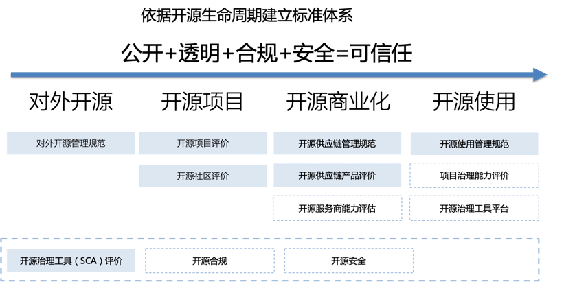
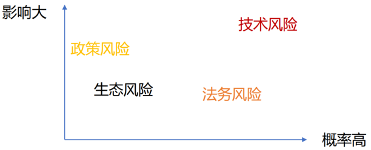
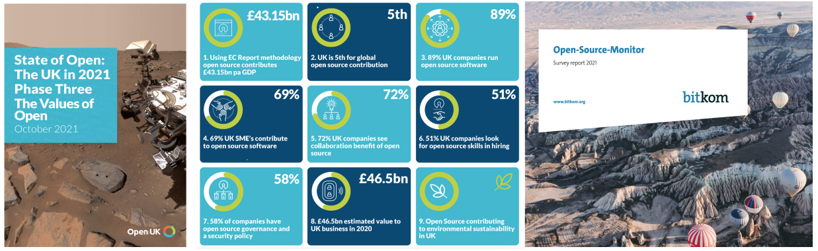
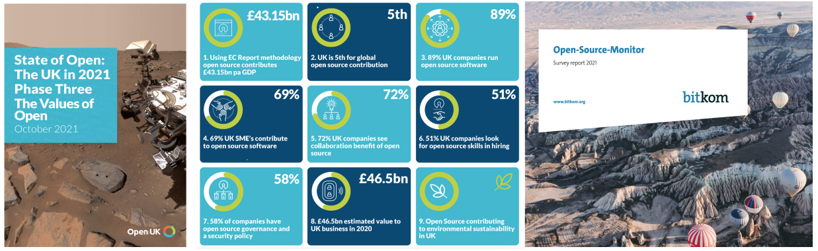
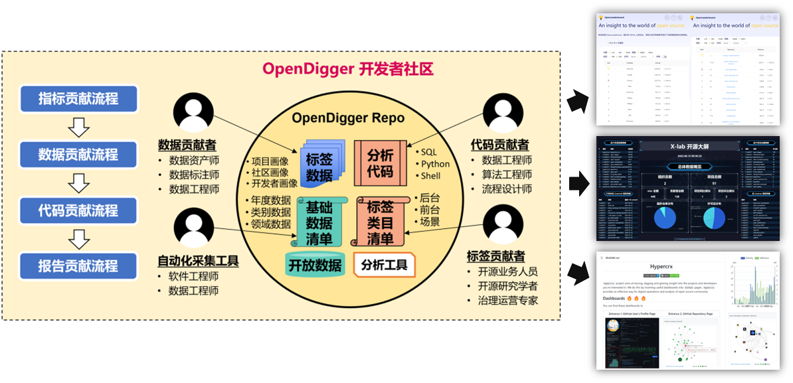

开源培训课程
开源社
开源是什么？
- Open Source，是一个专有名词，由开源软件促进会（Open Source Initiative）在 1998 年定义
- OSD（Open Source Definition），是一份由 OSI 发布的文档，经由 Debian 的创始人 Bruce Perens 撰写的《Debian 自由软件指导方针》修改而来
- OSD 一共 10 条，规定了符合开源的 10 个特征，如果一个项目仅仅是把自己的源代码公开出来，就宣称自己是开源软件，那是不成立的
开源是什么？
- 开源软件（开源硬件）容易定义，但是开源本身，却很难定义
- 开源是一种开放协作的模式
- 开源是一种开放社区的行为模式
- 开源的背后，是一种心理学现象
- 开源的成功，依赖于法律条款的保障
- 开源的崛起，在于商业企业终于意识到开源的威力
- 我们可以先从开源的历史讲起……
开源的前世今生
开源出现之前
- 出于教学与学术目的，交流各种源代码
- 大型机、中型机、小型机的时代，大多数个人都买不起计算机
- 有能力购买计算机的机构、大学，都聚集了大量的科研人员
- 代码的交流，就像学术交流一样，毫不考虑挣钱的事情

黑客伦理
- 对计算机的访问（以及任何可能帮助你认识我们这个世界的事物）应该是不受限制的、完全的。任何人都有动手尝试的权利！
- 所有的信息都应该可以自由获取。
- 不迷信权威——促进分权。
- 评判黑客的标准应该是他们的技术，而不是那些没有实际用途的指标，比如学位、年龄、种族或职位。
- 你可以在计算机上创造艺术与美。
- 计算机可以让你的生活更美好。
- 就像阿拉丁神灯，你可以让它听从你的召唤。
商业“魔头”现身
- 微型计算机、个人电脑开始兴起，普通玩家之间，也会无偿的交换盗版拷贝
- 1976 年，比尔盖茨发表著名的《写给电脑爱好者的公开信》，倡导版权与利益。而且愤怒的将那些免费复制软件的家伙，称之为：窃贼！
- 有谁会在没有任何报酬的情况下来做这些专业的工作？什么样的爱好者可以为他的产品投入三个人年的开发时间，并且发现所有的错误、编写文档以及免费发布这个产品？
- 众多企业出于商业目的，封闭代码，出售拷贝 —— 软件行业兴起！
黑客的愤怒 / 只是为了好玩
- UNIX 纷纷闭源，商业公司纷纷成立
- Novell owns AT&T‘s Unix：IBM-AIX、SGI-IRIX、SCO UNIX、HP-UX、SUN-Solaris
- Berkley（BSD）：SunOS、Ultrix、NetBSD、DEC-OSF、NeXTSTEP、Mac OS X
- 这些 UNIX，收费昂贵、互不兼容、而且闭源，令人抓狂，令黑客们愤怒！
- GNU/Linux 的崛起
- Richard Stallman 在 1985 年发表了 GNU 宣言，并于 1989 年起草了 GPL，提出了 Copyleft 的概念。Emacs、GCC 等工具纷纷问世
- GNU： GNU’s Not Unix
- 1990 年， Linus Torvalds 在芬兰赫尔辛基大学读书期间，开始开发 Linux，1991 年发布最初版本，并飞速发展至今
- BSD 家族由于受到 AT&T 以及后来 Novell 的诉讼，发展缓慢。FreeBSD 始于 1993 年
一些不可思议的事情
- Linux 1991 年发布第一个开源版本
- 通过互联网聚集了大量的志愿者，没有严格的质量标准，没有强有力的机构协调管理
- 最简策略：每周发布，然后接受反馈
- 到 1993 年底，Linux 在稳定性与可靠性上，已经与很多商业 UNIX 不相上下，并能支持比商业 UNIX 多得多的软件
- 大多数小型 UNIX 供应商倒闭
- 至今：Linux 已经大行于天下
初步的观察、思考与总结
- Eric Steven Raymond ：《大教堂与集市》
- 1997年5月27日发表首次公开发表
- 1999年由O’Reilly出版
- 2014年，中文版被翻译引进中国
- 在开源社区，被誉为“圣经”级的文献
后来的故事，我们大家就都知道了
开源定义与相关概念
自由软件的简单历史
- 1983 年，理查德·斯托曼 发起了 GNU 计划以编写一可以不受限制使用源代码的操作系统。
- 1985 年，理查德·斯托曼发布了 GNU 宣言。
- 1986 年，为了推广《自由软件定义》，他创建了自由软件基金会。
- 1989 年，该基金会发布了第一版的 GNU 通用公共许可证 （GPLv1），并在 1991 年发布了进行了少量更新的第二版。
自由软件的定义
粗略来讲，一个软件如果是自由软件，这意味着用户可以自由地运行，拷贝，分发，学习，修改并改进该软件。因此，“自由软件”是关乎自由的问题，与价格无关。要理解这个概念，你要按照 Free Software 中的“Free”是指“自由言论（free speech）”中的自由，而非“免费午餐（free lunch）”的免费这一意项。为避免歧义，在使用英文时，我们也会借用法语或西班牙语的“Libre Software”来指自由软件，这样可以明确表示我们说得不是免费。
四项基本自由
如果一个软件是自由软件，那么它必须为用户提供以下四项基本自由
- 自由度 0：无论用户出于何种目的，必须可以按照用户意愿，自由地运行该软件。
- 自由度 1：用户可以自由地学习并修改该软件，以此来帮助用户完成用户自己的计算。作为前提，用户必须可以访问到该软件的源代码。
- 自由度 2：用户可以自由地分发该软件的拷贝，这样就可以助人。
- 自由度 3：用户可以自由地分发该软件修改后的拷贝。借此，用户可以把改进后的软件分享给整个社区令他人也从中受益。作为前提，用户必须可以访问到该软件的源代码。
参考： https://www.gnu.org/philosophy/free-sw.html
OSD 的那 10 条原则是怎么来的？
- 1985年3月：GNU宣言
- 1989年2月25日：GPL
- 1991年9月：Linux内核
- 1993年9月15日：Debian发行版
- 1994年11月3日：RedHat
- 1997年7月5日：Debian社会契约
- 1997年7月：Debian Free Software Guidelines
- 1997年7~8月：Open Source Definition
- 1998年2月：OSI成立
- 2000年，发布OSD相关注释
- 目前的OSD 1.9，是2007年3月22日修订的
开源定义（Open Source Definition）
- 自由再分发 许可证不应该限制其他方出售或者分发该软件，当该软件作为包含多个不同源码程序的集成软件的一部分。许可证不应该要求专利费或其他销售费用。
- 源代码 程序必须包含源代码，需要有完整的源代码和可编译的形式。程序的某一部分如果不是来自这份源代码，那必须有一个不需要费时费财的公共方式获得源代码或者从网络上下载过来。源代码需要以易修改的形式呈现。不能故意模糊源代码，也不能只发布预处理器或编译器的输出文件。
- 衍生作品 许可证必须允许修改和衍生作品，需要像原来的许可证那样发布。
- 作者源代码的完整性 仅当许可证允许使用源代码分发“补丁文件”以便在构建时修改程序时，许可证才可以限制源代码以修改的形式分发。 许可证必须明确允许分发由修改后的源代码构建的软件。许可证可能要求派生作品带有与原始软件不同的名称或版本号。
- 不歧视个人或团体 许可证不能歧视任何个人或团体。
开源定义（Open Source Definition）
- 不歧视领域 许可证不能限制任何人将程序用在某个特定的领域。例如，不能要求人们不可以把程序用在商业领域或者基因研究。
- 许可证的分发 该程序所附带的权利必须适用于该程序再分配的所有人，而无需由分配方执行额外的许可。
- 许可证不能对一个产品特化 附加到程序的权利不得取决于程序是特定软件分发的一部分。如果程序是从该分发中提取并在程序许可的条款中使用或分发的，则程序重新分发的所有各方应具有与原始软件分发相同的权限。
- 许可证不能限制其他软件 许可证不得对与许可软件一起分发的其他软件施加限制。例如，许可证不得坚持在同一介质上分发的所有其他程序必须是开源软件。
- 许可证必须是技术中立的 许可证的提供不得基于任何单独的技术或界面风格。
开源定义存在的问题
Open source doesn't just mean access to the source code. The distribution terms of open-source software must comply with the following criteria:
- OSD 的本质，是定义了开源软件的授权协议的主要特征。并非定义了开源本身。
- 对于新出现的开源硬件，开源文档，开放数据等新的形式，并无涉及。
- 自由软件与开源软件的关系，也长期存在尚未解决的分歧。
- 至于开源软件、开源硬件、开源社区、开源产品、开源基金会等等概念，也一直没有明确、无歧义、相互之间协调一致的概念定义。
正在探索中的“开源定义”
开源是一种在软硬件开发、数据与信息共享中广泛采用的开放式协作模式，协作的产出物应该符合开源许可证条款的要求。
- 突出开放式协作
- 目标是创作数字化作品
- 四大要素：制定开放规则，依赖基础设施，广泛吸引参与主体，最终创作出目标对象
开源四大要素
- 开源规则 开源规则包括但不限于开源许可证、开源硬件设计规范、开源知识产权、开源治理框架和应用评价体系等。
- 开源基础设施 开源基础设施包括但不限于开源托管平台、网站、论坛、邮件列表、即时通讯工具、会议工具等。
- 参与主体 开源参与主体包括但不限于贡献者（个人/企业）/使用者（最终用户）/运营者（组织者/管理者）/合作者（法律/监管）。
- 开源对象（内容/目标） 开源对象包括但不限于软件、硬件、数据等。
其他需要定义的术语
- 开源技术
- 开源项目
- 开源社区
- 开源许可证
- 开源基金会
- 开源作品
- 衍生作品
- ......
还需要定义这些术语之间的关系
一个开源社区，可以开发多款开源作品。一个开源作品可以是一个开源软件，也可以是一个开源硬件。每一个开源作品可以有多个版本。每一个版本，可以有源代码、二进制包等多种发布形态。

开源生态现状
如何了解开源生态的现状
- Github年度报告：https://octoverse.github.com/
- RedHat：《企业级开源现状报告》
- Linux基金会：《Open Source Jobs Report》
- Open Source Initiative：《Annual Report》
- 新思科技：《开源安全和风险分析报告》
- 开源社：《中国开源年度报告》
- 信通院：《开源生态白皮书》、《全球开源生态研究报告》
- COPU：《中国开源发展蓝皮书》
- InfoQ：《中国开源发展研究分析》
- iResearch：《中国开源软件产业研究报告》
- OSChina & Gitee：《中国开源开发者报告》
开源生态的组成要素
开源生态以开源项目为中心建构，包括了贡献者组成的开源社区，各行业开源者，以及各行业使用者这五类产业要素，其中开源商业模式、开源社区运营和开源风险治理是生态发展关注的三大环节。

全球开源生态发展现状
- GitHub 数据
- 2020 年报告，托管仓库超过 2 亿，2021 年又新增 6100 万。
- 用户总数，从 2000 年的 5700 万，增长到 2021 年的 7100 万
- Gitee 数据
- 2021年，托管的代码仓库超过了 2000 万，⽤户总量超过 800 万

重大的并购案例
- 1999 年 Red Hat 收购 Cygnus Solutions（6.75 亿美元）
- 2003 年 Novell 收购SUSE（2.1 亿美元）
- 2005 年 Oracle 收购 InnoDB
- 2006 年 Oracle 收购 SleeepyCat
- 2006 年 Red Hat 收购 JBoss（3.5 亿美元）
- 2007 年 Apple 收购 CUPS
- 2007 年 Sourcefire 收购 ClamAV
- 2007 年 Citrix 收购 XenSource（5 亿美元）
- 2008 年 Sun 收购 MySQL（10 亿美元）
- 2008 年 SpringSource 收购 Covalent Technologies
- 2009 年 Oracle 收购 Sun（74 亿美元）
- 2009 年 VMware 收购 Spring Source（4.2 亿美元）
- 2018 年 Microsoft 收购 GitHub（75 亿美元）
- 2019 年 IBM 收购 Red Hat（340 亿美元）
2022年新思科技开源安全和风险分析报告


繁荣背后的冰山现象
- 一座冰山是“开源项目”，海面之上看得到的开源项目，只是开源世界里的极小部分
- 海面之下的开源项目，不仅重要，而且是海面上的开源项目，存在的基础
- 但是，海面之下的开源项目，几乎没有商业价值，也没有投资前景
- 另一种冰山是“开源贡献者”，海面之上的开源开发者，只是开源社区里的一小部分人
- 他们的确做出了极大的贡献，也因此享受到了“礼物文化”
- 海面之下的开发者，他们的贡献甚至被忽略了，社区的尊崇地位，几乎与他们无关

大缓坡
从趋势来看，开源一直在不断增长。无论是在技术范围的广度，还是技术依赖的深度，还是实际采用的比例，都在不断的增加。
但是，另一方面，我们也发现：采用开源的风险，以及采用开源的成本，都在不断的上升。从收益递减的规律来看，我们也可以说：采用开源的收益的增长幅度正在趋缓，而成本的增长幅度正在上升。因此，开源的整体发展，将逐渐呈现一种大缓坡的趋势。

如何解决供应链的隐忧？
开源软件的供应链与一般的供应链，有何区别？传统的供应链，是一级与一级之间，都签了合同的。但是在软件，尤其是开源软件的供应链，每一级之间，都有免责条款。
一方面是供应链的延续性，另一方面是责任链的断裂（免除）。于是，我们就会发现一个实际存在的现象：因为责任链条断裂，所以利益链条也断裂了。
只有将断裂的责任链、利益链重新连接起来，开源软件的供应链才有可能变得健康。开源生态，才能迎来新一轮的繁荣。
各国开源政策与标准
美国篇
出台支持开源发展的政府政策
早在 2002 年，美国智库就开始对开源软件的政府政策问题进行研究，并发布关于开源软件的政府政策报告，对包括政府采购和专利等在内的政策议题进行探讨，为政府政策提供支持。此后，欧美国家政府开始有意识地出台相关政策推动开源发展。据欧盟委员会“开源观测”项目 2020 年发布的分析报告，欧盟成员国（包括英国）过去 20 年来共出台了不少于 75 份政策文件（如政府计划、战略文件等）和 25 份法律文件（如议会决议、法律、法规等）以推动开源发展；其中，有 25 份政策文件和 6 份法律文件专门针对开源软件而制定，其他文件则是在其数字化议题中提到了开源。欧美国家政府促进开源发展的政策主要包括：推动政府软件开源和公共数据开放、引导业界关注开源风险等。
推动政府软件和财政资助项目成果软件开源
2016 年 8 月，美国政府发布“联邦源代码政策”，要求联邦机构每年必须将不少于 20% 的新开发源代码以开源形式公开发布，并且要求开源至少 3 年。2019 年，英国出台的《数字服务标准》及此后更新的《服务标准》中要求，政府部门应选择合适的许可证开源所有新的代码。2020 年 10 月，欧盟委员会批准了《开源战略 2020-2023》特别强调软件解决方案和专业知识的共享和重用，以及在信息技术和其他战略领域增加开源的使用，秉持开放、转型、共享、贡献、安全等原则提高欧洲数字化建设和公共服务能力。2021 年，法国发布的《国家开放科学计划（2021—2024 年）》要求，公共资金资助的研究数据、算法和源代码应通过开放许可进行传播共享。
推动政府公共数据开放
2016 年，法国《数字共和国法案》要求开放公共研究数据。2019 年 1 月，美国国会通过了《开放政府数据法案》，将开放数据作为美国法典的一部分。美国成为继法国、和德国之后，将开放政府公共数据从政府政策上升为国家法律的国家。在这些国家，政府公共数据应以机器可读的格式，在不损害隐私或安全的前提下，默认向公众开放。
引导产业关注开源风险
早在 2004 年，美国联邦金融机构审查委员会发布的《开源软件风险管理指引》要求，金融机构在采用开源软件时参照该指引加强风险管理。此外，英国政府发布了《开放代码的安全注意事项指南》；欧盟发起过开源软件审计项目改善关键开源软件的安全性。
2022 年，美国白宫与开源组织、科技巨头共同推动 1.5 亿美元开源软件保护计划。Linux 基金会和 OpenSSF 已经为 1.5 亿美元确定了 10 个投资流，将在两年内分摊。
英国开源产业政策
英国在 2004 年首次发布开源产业政策，并于 2009 年 2 月进行了更新，开源非营利组织 OpenUK 于 2021 年 2 月在 2021 年欧盟开源政策峰会发布了其三阶段报告，报告指出开源技术为英国贡献了高达 430 亿英镑（602.2 亿美元）的经济增长，这表明英国在开源开发方面领先于欧洲。并表示，英国仍是开源技术的领导者，其国内预计有 12.6 万名贡献者参与了创建、开发和维护开源的工作；这一数字将近欧盟 26 万名开源开发者中的一半。
事实上早在 2012 年 11 月，英国政府内部就已经就采用开源技术发出了 Open Standards Principles 的指引，但这次却更进一步，将采用开源技术常规化。这次在政府服务设计手册中的 When to use open source 中，就明文指出政府必须在作业系统、网路软体、网页伺服器、资料库和程式语言方面，逐步以开源技术技术取代专属或闭源的技术。
2016 年为英国政府开发的新代码现在已经开源了。在 2017 年，已经越来越多的国家，组织和公司采用开源软件。现在，英国政府也宣布采用开源公司办公套件，那就是基于 LibreOffice 的“GovOffice”。协作办公套件 GovOffice 支持超过 100 种格式，包括 Microsoft Office 和 Google Docs。GovOffice 是基于最流行的办公软件 LibreOffice，也将支持从移动设备直接跳转到 Web 浏览器打开和编辑文档。这个措施将会覆盖所有的 Govt 机构，甚至是政府机构代表。
德国的开源产业政策
自 2001 年德国慕尼黑决定推动 LiMux 计划，2005 年正式启动了相关迁移工作，但是，2017 年 11 月，慕尼黑城市委员会（Munich City Council）正式决定到 2020 前回归微软的 Windows 系统，这意味着德国开源运动遭受重大挫折，甚至于可以说是失败了。
慕尼黑启动的LiMux既包括操作系统，还涉及到了大量的应用软件。操作系统主要推出LiMux，它是Linux的一个发行版本，包括了Ubuntu、LibreOffice和WollMux等套件；应用软件主要涉及到OpenOffice，后来切换到LibreOffice。
只是非常可惜，这种技术上的独立运动，在慕尼黑的开源计划中，并没有足够的群众基础。德国是一个重视产业政策的国家，强大的政府希望推动具有自主知识产权的开源运动，借此挑战微软等“霸权”，只是事与愿违，该运动并没有得到除了跟LiMux项目利益相关者之外的支持，甚至于一些德国IT企业，例如SAP等也没有深入参与该计划。
总体来讲，德国开源产业还处于个人主义阶段（缺乏群众基础），没有进入到成熟商业模式运行阶段。
美国的限制性政策
- 1996 年成立，瓦森纳安排全称为“关于常规武器和两用物品及技术出口管制的瓦森纳安排”（The Wassenaar Arrangement on Export Controls for Conventional Arms and Dual-Use Good and Technologies，WA）
- 2013 年 12 月，出口限制技术清单进行了修订，增加包括基于互联网的监视系统。被出口管制的新技术包括“渗透软件”（旨在破坏计算机或网络保护措施以提取数据或信息的软件）以及 IP 网络监视系统。
- 2019 年，谷歌限制华为使用安卓服务（GMS）。业界开始讨论：开源软件的出口是否也会受到限制？
- 2019 年 5 月 22 日，Apache 回应：参与开源不受美国出口管理条例约束
- 2020 年 7 月 8 日，Linux 基金会发布了一份中英文版的《了解开源科技和美国出口管制》的白皮书。当中提到，开源技术不受制于《美国出口管制条例》（EAR）
- 2019-05-29：全球最大的技术专业组织 IEEE（电气电子工程师学会）宣布暂时禁止华为担任旗下期刊编辑或同行评议审稿人
- 2019-06-03：IEEE 发布合规性声明，声称在向商务部咨询后宣布解除对华为的管制，华为员工可以正常参与期刊编辑和同行评审工作。
- 2021-10-21：突发！美国政府将禁止向中国和俄罗斯出口黑客工具
- 2022-06-04：美商务部新规：未经审批禁止向中国分享安全漏洞，微软反对无效
简单总结
- 目前始终没有真正涉及开源供应链
- 周边有很多小动作
- 限制个人
- 限制贡献
- 限制加密软件、黑客工具
- 限制（商业）漏洞披露
- 不能掉以轻心
中国的政策
2019 年，华经情报网在《2018 年中国开源软件行业发展现状，开源软件整体发展形势向好》文章中，对国内开源政策做了详细说明，以下是部分段落的节选。
2017 年，我国政府对开源的认识进一步提升，对开源软件发展的政策支持力度在不断加强。《信息产业发展指南》明确提出："支持企业联合高校、科研机构等建设重点领域产学研用联盟，积极参与和组建开源社区"，"支持开源、开放的开发模式"，重点推进云操作系统等基础软件产品的研发和应用。 《软件和信息技术服务业发展规划（2016－2020 年）》中提到："发挥开源社区对创新的支撑促进作用，强化开源技术成果在创新中的应用，构建有利于创新的开放式、协作化、国际化开源生态"，"支持建设创客空间、开源社区等新型众创空间"，要实施软件"铸魂"工程，重点"构筑开源开放的技术产品创新和应用生态"。
中国的开源规划
2021 年 3 月 12 日，新华社受权全文播发《中华人民共和国国民经济和社会发展第十四个五年规划和 2035 年远景目标纲要》，「开源」首次被明确列入国民经济和社会发展五年规划纲要，相关内容摘录如下：
聚焦高端芯片、操作系统、人工智能关键算法、传感器等关键领域，加快推进基础理论、基础算法、装备材料等研发突破与迭代应用。加强通用处理器、云计算系统和软件核心技术一体化研发。加快布局量子计算、量子通信、神经芯片、DNA 存储等前沿技术，加强信息科学与生命科学、材料等基础学科的交叉创新，支持数字技术开源社区等创新联合体发展，完善开源知识产权和法律体系，鼓励企业开放软件源代码、硬件设计和应用服务。
开源标准——供应链相关标准
- 供应链安全相关标准：
- ISO/IEC 27036-3/4 —— ICT 供应链安全指南/云服务安全指南
- NIST SP 800-161 —— 联邦信息系统和组织供应链风险管理方法
- GB/T 36637-2018 —— 信息安全技术 ICT 供应链安全风险管理指南
- 代码安全相关标准：
- ISO/IEC 25000 系列标准 —— 系统和软件质量需求和评估（SQuaRE）
- GB/T 38674-2020 ——信息安全技术 应用软件安全编程指南
- GB/T 39412-2020 —— 信息安全技术 代码安全审计规范
- 代码安全相关认证：
- 网络安全等级保护认证 —— GB/T 22239-2019 信息安全技术 网络安全等级保护基本要求
- 数据安全认证 —— GB/T 35273-2020 信息安全技术 个人信息安全规范
- 信息安全管理体系认证 —— ISO/IEC 27001:2013 Information security management systems
- 隐私信息管理体系认证 —— ISO/IEC 27701:2018 Privacy Information Management
开源标准——开源治理相关标准
- OpenChain Specification - ISO/IEC 5230:2020
- https://www.openchainproject.org/
- The Specification outlines elements of a successful open source license compliance program.
- SPDX - ISO/IEC 5962:2021
- https://spdx.dev/
- This Software Package Data Exchange® (SPDX®) specification defines a standard data format for communicating the component and metadata information associated with software packages.
- CHAOSS - Community Health Analytics Open Source Software
- https://chaoss.community/
- CHAOSS is a Linux Foundation project focused on creating analytics and metrics to help define community health
- SBOM - Software Bill of Materials
- https://www.ntia.gov/SBOM
- A “Software Bill of Materials” (SBOM) is effectively a nested inventory, a list of ingredients that make up software components.
信通院：可信开源标准体系
标准院：开源标准体系
- 《信息技术 开源 开源概览与术语》
- 《信息技术 开源 元数据通用要求》
- 《信息技术 开源 开源许可证框架》
- ...

开源基础设施
第一代开源基础设施与协作模式
第一代开源协作模式，在早期几乎没有符合自身特殊需要的工具，有什么用什么，因此最为常用的email，被发展为Maillist，成为整个开发团队的协作核心工具，大多数操作系统内置的diff/patch工具，使得代码的交流以email patch为主。这些老牌的开源项目，从使用RCS、CVS，到了后来也开始逐步引入svn/git，bugzilla这样的工具，但是围绕mailing list开展协作的特征，则持久不变。
作为协作核心的Maillist
一个开源社区，往往就是一个邮件列表，随着软件的日益复杂，社区的不断扩大，邮件列表也会不断分化，通常会划分为：核心组、开发组、用户组。开发组与用户组的邮件列表，随着软件的架构分化为多个模块，还会进一步分解。
在邮件列表里，所有的用户都是平等的，在无法用工具保障流程的情况下，社区逐渐发展出了一套严格的邮件礼仪和格式规范。不规范的邮件，不会被理睬；不礼貌的家伙，甚至会被赶走。
邮件越来越多，即使分成多个邮件列表，依然太多。Archive这样的邮件归档、查阅的工具，就必须得有了。一封邮件，大家都来回复，严格re:的标题，组成了一个可供追溯的线索。
在邮件列表里，通常出现个人的名称，加上Reported-By、Tested-By、Acked-By的标记，即是一种代表个人名义的认可，也是流程规范的一部分，更是计算各人贡献的依据。
Bugzilla应运而生
在邮件中，有一类话题是最活跃的，那就是bug。但是，通过翻找邮件查阅bug的最新的解决状况，是非常困难的。一个bug，从提出，到最终解决，并被确认在哪一个版本中发布fix，是一种稳定的状态转化模式。一个专有的处理工具，势必应运而生。Bugzilla、trac等一批工具，就由此被创造出来了。
代码提交流程的规范化
开源社区，表面上非常的崇尚民主自由，但实际上却盛行精英主义、甚至是个人独裁的。我们往往会给某个开源项目的创始人，冠以「仁慈的独裁者」的头衔。虽然，是否仁慈，大家不得而知，但独裁确实是显然的了。
最大的独裁，是代码的管理权。因为作为创始人与核心开发者，他们往往以一己之力，贡献了绝大多数的代码，确定了项目最初的架构与发展方向。他们不会容忍任何人随意地向代码库提交代码。
在邮件列表中，一个新来的家伙，从没人认识，到能够独立的向代码库提交代码，非得经历艰辛的历程不可。这样的历程，简单的说，就是一次一次的Code Review。被审核通过、合入代码库的patch越多，一个人对于社区的贡献就越大，可信度也越高，身份地位也逐步提高，然后，他也就可以去Review其他人的代码了。
总结：在简陋的工具条件下，发展出高效、严格的社区协作模式
第二代开源基础设施与协作模式
第二代开源协作模式，有两大特征：Web化、集成化。随着Web技术的不断成熟，开源社区也开始创造一个又一个的Web开源项目，其中Web化的项目管理工具，如雨后春笋般冒了出来。在wikipedia上，issue-tracking systems列出了55个，project management software列出了152个，其中开源的也有30+，open-source software hosting列出了22个，堪称蔚为壮观。
这类平台又可以分为两大类：基于开源的项目管理工具或issue tracking工具，自建平台，以JIRA、DotProject、Redmine为代表；基于免费开源托管平台，以SourceForge、Google、LaunchPad为代表；
第二代的开源项目管理工具，可以说，主要是在向企业内的开发管理学习。文档、流程、角色、权限、统计报表等等功能，都开始出现了。有些开源项目，也在用这些东西。
以SourceForge与Google Code为代表的开源托管平台免除了开源项目搭建自己的官方网站，管理工具，代码仓库之类的繁琐事务，大大促进了开源项目的发展。不过，由于平台的功能总是受限的，因此自建门户，自组工具的开源项目依然层出不穷。
issue & milestone
在第二代开源协作模式日渐成熟的过程中，另一股潮流也正方兴未艾：「敏捷软件开发」。其中，最为深入人心的概念之一，就是每个迭代，完成一批User Story。
在开源社区，这个概念被进一步演绎：无论是bug和feature，都被统称为issue。这些issue，被分到不同的milestone（版本），即使最后有可能延期，milestone也会定义一个预期完成时间。
服务平台化
平台在逐步进化，因而能够帮助开源项目，打理越来越多的事务。通常主流的开源项目托管平台，都能够完成：
- 在线代码浏览，并能够支持不同的配置库
- 需求管理、Bug管理，通常合并为Issue tracking
- 版本与里程碑管理
- 文档编写与管理，以Wiki的形式为主
更进一步的，还有能够完成：简单的自定义工作流、文件夹与静态资源管理、输出各种统计报表、甚至提供论坛、搜索、邮件列表以及各种排行榜等等。
总结：以Web形式提供的集成化开源项目托管平台，标志着开源项目的协作模式，进入成熟期
第三代开源基础设施与协作模式
随着MySpace、Facebook与Twitter这样的SNS网站的兴起，开源项目的协作模式，受到SNS的启发，也随之进入了第三代，以Social Coding为核心的开发协作模式，这样的模式在以Github为代表的网站上，体现的最为充分，众多的模仿者也层出不穷。
围绕着Github，一大批周边扩展服务被建立起来，构成了一个更加有活力的生态圈。而程序员们，不仅在Github上参与开源项目，更在Github上结交朋友，分享经验，增进能力。甚至这样的协作模式，还拓展到了编程领域之外，成为开放式协作的流行模式。
激励机制
第三代开源协作模式，以Github为代表，以Social Coding为精髓，这一代模式想要解决的问题，是激励机制的问题。
借鉴了社交网络中的各种数值化模型，关注者数量，Star数量，Fork数量，Issue数量，Pull Request数量，都在显要位置标示出来，对于开发者形成正向激励，还有很多的统计图表，形象的展示了项目的活跃程度。
开源社区，原本就有非常深厚的，统计补丁数计算贡献度的传统，这一点在Github被发扬光大，可以说是优秀的继承与创新。
基于fork/pull request的协作机制
在github，一键就能够fork自己的分支，然后可以跟原有的分支毫无关联，也可以非常方便的提交pull request，这就带来了更加频繁的分裂，使得分裂常态化了。
原来的开源社区，开发者修改了代码，希望能够贡献给社区，需要穿越种种障碍，如果社区不接受，最后开发者只能逼不得已，自己开一个新的分支，变成一个新的项目。
Pull request，从一个代码合并的方式，变成了开发者之间主要的交流方式，他们发现，最好的交流，正是通过源代码来交流，一切的讲道理，都不如用源代码来讲道理。这恰恰是程序员们最习惯，也最喜欢的一种交流方式。
围绕Github出现的扩展服务
- 与其他项目管理工具集成（Bugzilla，Asana， Basecamp，Redmine，JIRA，ZohoProject）
- 与持续集成服务集成（Travis，Bamboo，CircleCI）
- 与消息通知服务集成（Amazon SNS，Email，IRC，Jabber）
- 与DevOps服务集成（AWS OpsWorks， DeployHQ）
这些扩展服务，极大的丰富了开源生态圈的内涵。
最新的发展，是GitHub的Robot与Actions，基本上内置了开源开发协作所需要的一切功能。
总结：社区天生就应该是社交化的，Social Coding与开源社区，简直就是天作之和。
暗线：工具、习俗背后的逻辑
开源社区的协作模式，为何会变？变化背后的逻辑是什么？
- 开源社区研发工具的两大目标：降低门槛，提高效率
- 如何计算参与者的贡献？
- 如何激励、吸引、回报参与者？
- 如何保障项目质量？
- 如何协调一致的工作？
- 如何在社区里平等、高效的协商？
最近的发展
- 开源供应链安全，越来越被重视
- 智能辅助开发，带来的挑战
- 如何阻止开源世界的分裂？
企业与开源
企业与开源的关系
不解 → 震惊 → 担忧 → 分析 → 诋毁 → 反思 → 引进 → 利用 → 拥抱
从历史上来看，最初的企业都是看不懂开源的。随着愿意尝试的企业越来越多，愿意了解甚至学习开源的企业越来越多。到了现在，企业“号称”拥抱开源，已经成了一种政治正确的选择。但是，在我看来，只有斤斤计较的企业，才有可能在开源的领域越陷越深。
对于企业来说，使用开源能够省钱，参与开源甚至主动开源还能赚钱，这才是他们愿意持续投入开源的核心动力。
个人可以坚持理想主义，但是企业首先应该活下去。只有那些斤斤计较，然后不断尝试，再不断地从开源获得回报的企业，才会是开源领域坚定的支持者。
开源给企业带来的机会
开源是如何驯化企业的？
越来越多的企业开始尝试开源，但是，事情往往都不是一帆风顺的，尤其是那些较早采用开源的企业，多半都有掉进坑里的机会。但是，至少有两类企业，会坚定的使用开源。第一类是非常小，甚至尚未赢利的初创企业。对于他们来说，成本是首要因素。另一类是高速成长，越来越大的企业，传统的商业软件，已经无法满足他们的需求了，他们只能自己动手，基于开源软件做修改，来满足自身的需求。第三类企业，则是那些找到了基于开源的商业模式的企业。随着开源软件的不断成熟，这样的商业模式越来越具有可行性，也就有越来越多的企业投身其中。
从使用，到修改后使用，甚至修改后赚钱，总之是有很多企业，在内部维护了某个开源软件的自己的私有版本。这时，有两种新的“烦恼”产生了。首先是License，企业们开始意识到，有些License是强制他们要在修改商用之后，将修改的代码开源的。为了避免法律风险，他们只能将代码回馈社区。其次是开源的发展速度太快了，当开源社区又推出新的版本，企业自己的私有版本，该何去何从呢？留之无用，弃之可惜。企业面临一个艰难的选择，要不要将自己的私有版本，回馈社区？也许，尽可能减少与上游社区的差异，才是成本更低，收益更高的方案。
从怀疑到采用，从私下使用到回馈社区，企业们也必须更加深入的理解并认同开源社区的理念和文化，这就是企业被开源驯化的过程。
企业里的员工发生了什么变化？
那些开始接受开源的企业，看待员工的方式，首先会发生变化，然后是员工的构成成分，以及他们的能力结构，都将发生缓慢，但却不可逆转的变化。
首先是招人，那些从不使用开源技术的企业，只会使用自己研发的技术，自然也不会将掌握某种开源技术，写入他们的招聘条件之中，只能要求考察各种基本能力。反之，他们就会想要寻找各种熟手，甚至高手。以致到了现在，候选人可以仅凭自己的开源经历与社区贡献，就足以证明自己的能力。
其次是人员组成，越来越多的开源高手进入企业，并且胜任愉快，这就使得“外来的和尚会念经”成为可能。企业内部的技术栈，系统架构，甚至开发模式，也会逐渐的变得越来越开源。企业内部，从用开源、到学开源，再到懂开源。这样的人也会越来越多。
最后是一个顺理成章的变化，在就业市场上，懂开源成为一个巨大的优势，开发者在职业生涯中，积累开源方面的经验将不会被浪费。更进一步说：由于开源技术的普及，开发者的横向比较变得更加容易了。于是会有越来越多的开发者，乐于在工作中使用开源技术（甚至是尚不成熟的开源技术），还会有不少比例的开发者，不仅在工作中使用，也愿意投入自己的业余时间，成为开源社区的贡献者。
更懂开源的企业们在做什么？
对于员工们发生的变化，有些企业是比较担忧的。随着开源技术大行其道，开发者群体的能力和经验积累变得更加容易了。一方面企业更加容易招到符合自己需要的人才，另一方面，企业自己的人才也更容易跳槽了。当然，那些不太懂开源的企业只是关注自己失去的人才，而那些更懂开源的企业，则看到了更大的机会。
一个企业，为啥要把自己的内部项目开源出来呢？我们可以思考一个数学模型，某一个市场，原本的规模是100，其中一个企业的市场占有率是20%。当他开源了一个项目，这个市场将变得更大、更成熟，市场规模从100变成了200。由于参与者众多，企业的市场占有率从20%，变成了15%。但是，他的整体收益，依然上涨了50%。当然还有一些企业，通过开源，不仅做大了市场，更提升了自己的市场份额，那就更厉害了！
谷歌的安卓系统，就是成功典范！
企业参与开源的不同阶段
企业使用开源与供应链风险
如何研究开源供应链风险？
- 技术性风险
- 代码bug
- 安全漏洞
- 恶意软件投毒
- 网络阻断
- 法务风险
- 未按照规律履行合规义务，导致诉讼风险
- 开源软件修改License，开源转闭源
- 生态风险
- 社区消亡，无人维护
- 无法参与上游贡献
- 政策风险
- 平台限制使用
- 软件排除特定用户
如何评估开源供应链风险

如何应对开源供应链风险
- 风险排序： 技术风险 > 法务风险 > 政策风险 > 生态风险
- 区分企业投入还是社会投入
- 企业投入：技术风险、法务风险
- 社会投入：政策风险、生态风险
- 区分市场机制与公共能力
- 市场机制：建设有利可图的服务
- 公共服务：共建无利可图的服务
企业之间基于开源软件的竞争与合作
论文来源
《Competitive Strategy for Open Source Software》
- Vineet Kumar ：哈佛大学哈佛商学院，波士顿，马萨诸塞州，02163，vkumar@hbs.edu
- Brett R. Gordon ：哥伦比亚大学商学院，纽约，纽约，10027，brgordon@columbia.edu
- Kannan Srinivasan ：卡内基梅隆大学泰珀商学院，宾夕法尼亚州匹兹堡，15213，kannans@andrew.cmu.edu。
论文摘要
商业开源软件（COSS）产品 —— 基于公开源代码的私人开发的软件 —— 代表了一个快速增长、价值数十亿美元的市场。开源软件市场竞争的一个独特方面是，许多开源许可证要求企业公开某些增强功能，这就刺激了企业搭上他人贡献的便车。这种做法提出了一些令人费解的问题。首先，如果竞争者可以免费使用这些贡献，那么企业为什么要进一步开发产品？第二，一个基于免费搭车的市场如何产生高质量的产品？第三，从公共政策的角度来看，强制分享改进的做法是提高还是降低了消费者剩余和行业利润？
为了解决这些问题，我们建立了一个开源软件公司之间的双边（two-sided）竞争模型。我们的模型包括：（1）两家公司在一个垂直差异化的市场中竞争，其中产品质量是公开与私有成分的混合；（2）一个开发者市场，公司在观察到他们对开源贡献的信号后雇用他们。我们证明，在均衡中支持搭便车行为，强制分享的设置可以产生高质量的产品，而且搭便车实际上可以增加消费者剩余和行业利润。
模型一：私人和共享特征市场

模型二（1）：产品市场——私有特性开发模式
模型二（2）：产品市场——共享特性开发模式

模型的结论
- 在企业的竞争市场中
- 强制分享的设置（类似于GPL的授权协议）可以产生高质量的产品
- 积极贡献更多开源的企业，获得更加的竞争力
- 在均衡中支持搭便车的行为，搭便车实际上可以增加消费者剩余与行业利润
企业与开发者市场
开发者发出的信号
开放源码为高技能的开发者提供了一种机制，通过向开放源码贡献功能，向企业发出他们的技能（类型）。开放源码的贡献为企业提供了一个关于开发者技能的可靠信号，因为潜在的雇主可以审查开发者的贡献（Leppamaki 和 Mustonen 2009）。这种贡献的动机与解释开发者的开源贡献的经济信号原理是一致的（Lerner 和 Tirole，2002）。
开发者的竞争市场中的均衡
- 开发者对企业的溢出效应：开发者对开源的贡献越多，企业对于他们的竞争就越不激烈，这样就起到了减少工资的作用
- 企业与企业之间会发生溢出效应：强制分享的设置，会导致企业对于开发者人才的竞争，不那么激烈
如何理解企业之间通过开源竞争？
有人认为：经济学，就是研究“稀缺性”的学科，在传统的世界里，我们谈到稀缺性，往往都会想到“各种资源”、“生产资料”。但是在数码的世界里，几乎所有的资源、资料，都是可以被无限复制的，随着网络建设的不断发展，我们甚至无需“软盘”、“光盘”、“U盘”，而且网络传输的费用也几乎等于0。
在数码的世界里，唯有“时间”是稀缺的，我们有时候称之为“眼球经济”、或者“注意力经济”、或者“流量经济”，全人类的所有可使用的时间，是一个很大的常数。各个开源社区，当然还有互联网、SNS、短视频和购物平台，都在争夺这些时间与注意力。
我们可以从这个角度，来理解企业之间的竞争，企业开源不仅仅是与其他开源企业在竞争，而是在与所有的潜在竞争对手，争夺开发者的注意力（业余时间）。
如何理解开源与商业的关系？

企业文化与开源文化
企业为开源采取的行动

什么是企业文化？
组织文化（Organizational Culture）或者企业文化（Corporate Culture） 是指一个组织由其共有的价值观、仪式、符号、处事方式和信念等内化认同表现出其特有的行为模式。可以观察到组织人员的行为规律、工作的团体规范、组织信奉的主要价值、指导组织决策的哲学观念等等。
在现代管理学里，这是一种企业主动通过一系列活动来塑造而成的文化形态，当这种文化被建立起来后，会成为塑造内部员工行为和关系的规范，是企业内部所有人共同遵循的价值观，对维系企业成员的统一性和凝聚力起很大的作用。
什么是开源文化？
李建盛：《我们常说的开源文化，到底是什么？》
- 开放与共享
- 代码风格、品味
- 沟通与协作
- 知识财产权的保护
- 开源软件的商业逻辑
- 价值观
开源社：《开源人宣言》
- 分享（Sharing）：乐于分享是一切善举的开端
- 开放（Openness）：公开透明是一切良好协作的基石
- 平等（Equality）：平等是社区健康的保障
- 协作（Collaboration）：开放式协作，逐步凝聚共识是社区繁荣的秘诀
- 创造美好世界（Build a better world）：创造更加美好的世界，是开源的终极追求
开源文化，是否能够改变企业文化？
或者说：企业文化是否能够更多的接纳开源文化？
开源治理和管理
- 从开源看企业
- 从企业看开源
- 开源治理与OSPO
- 开源管理工具集介绍
从开源看企业
人类的发展，逐步走向全球化深度协作，开源成为一种先进的协同生产方式
开源在产业界实现了广泛覆盖，开源的速度也越来越快

开源创新的纵向一体化

开源给企业带来的机会
从企业看开源
开源发展策略的共识

全球企业开源发展路线
Linux基金会的运作

TODO Group 的运作

欧盟的开源发展路线
 

企业参与开源的不同阶段

从开源社区视角看企业参与开源

- 自由职业者：追求个人兴趣与价值的实现；
- 商业组织：追求长期价值创造和业务利润转化，通过贡献获得回报，并推动开源生态发展；
- 基金会：追求开源生态的健康与可持续性发展；
- 政府：在一个地区或地方，拥有法定的权力，追求公平的繁荣；
- 事业组织：教育科研机构、行业学会等，追求每个组织的宗旨与使命；
- 国际组织：国际协会、区域组织等，致力于公平、安全、稳定的可持续发展；
- 用户：社区提供的开源项目的使用方，追求长期、可持续、稳定可靠的开源组件。
企业为开源采取的行动

开源治理与OSPO
企业为什么要制定开源战略规划？

企业开源战略四大关注点
- 寻求参与的开源项目
- 希望密切联系的相关开源项目社区
- 开源治理的有效性
- 企业文化的开放性
实施企业开源治理的基础架构

开源战略需要构建基础架构来支持开源工程工作。 基础架构需要支持的四个关键支柱：
- 社区参与
- 开源贡献
- 开源合规性
- 开源消费
开源社区是唯一的项目治理平台，因为它涉及公司与公司所涉及的特定开源项目之间在使用、合规性和贡献方面的所有交互。
开源消费与合规的基础设施

开源贡献基础设施

设立 OSPO——建立组织层面开源战略的抓手
OSPO（Open Source Program Office）即开源项目办公室，最早成立的公司为谷歌，成立于 2004 。此后，微软、Adobe、Netflix、Intel 等科技公司纷纷跟进成立企业 OSPO。OSPO 是企业实施开源战略的有效抓手，2013 年起中国企业也陆续开始组织建立自己的开源项目办公室。

企业开源的组织架构设置：开源项目办公室
开源项目办公室是什么？
在公司内部支持、培养、共享、解释和发展开源的组织架构；企业可以明确地建立和执行开源战略，为他们的领导者、开发人员、营销人员和其他员工提供他们需要的工具，使开源在运营中取得成功。
为什么需要开源项目办公室？
- 开源是一项战略优势，需要协调，集中和清晰的沟通，没有管理过程将会产生混乱和风险;
- 为了真正从开源中受益，需要透明和协作的文化。
开源项目办公室的职责
- 在公司内外沟通开源战略，监督战略的执行；
- 在商业产品和服务中促进开源的有效使用；
- 确保高质量和频繁地向开源社区发布代码；
- 与开发人员交流，使公司做出有效开源贡献；
- 在组织中培养开源文化；
- 维护开源许可的遵从性审查和监督。
开源项目办公室架构
- 取决于公司的主要业务和开源策略，它们可以位于首席技术官办公室等地方：
- 法律：开发人员可以就出现的问题与法律团队紧密合作。
- 工程：直接将精力集中在使开发人员的工作更加有效和富有成效上；
- 开发者关系/营销：使用开源来收集旨在销售使用开源构建的产品的销售线索。

企业实施开源战略的策略与回报
5C 策略原则：
- 消费（Consumption）
- 合规性（Compliance）
- 社区（Community）
- 贡献（Contribution）
- 竞争（Competition）
开源项目办公室收益
- 提高开发人员的敏捷性/速度
- 更好更快地遵守许可证
- 在开源之上建立差异化
开源作为营销策略
开源不仅仅是对源代码和口碑的共享，也是最佳的产品营销策略
开源的回报是获得竞争优势
哈佛商学院（Harvard Business School）的近期研究表明，开源贡献公司从开源中获取的生产价值比不回馈开源的公司高出100％。
开源管理工具集介绍
TODO 组织的 Landscape

面向开源治理的开源项目
OSPO 工具箱之 CHAOSS

OSPO 工具箱之 OpenDigger

OSPO 工具箱之 Hypercrx
开源安全风险
参考资料
- 国家计算机网络应急技术处理协调中心《2021年开源软件供应链安全风险研究报告》
- 信通院《2022年开源安全深度观察报告》
- 新思科技《2022年开源安全与风险分析报告》
- 奇安信《2022中国软件供应链安全分析报告》
- 信标委《信息安全技术 软件供应链安全要求》
回顾开源供应链风险的分类
- 技术风险
- 法务风险
- 生态风险
- 政策风险
大多数的安全风险分析报告，主要只涉及技术风险中的漏洞、以及法务风险的一部分。
奇安信的安全风险分类
- 输入验证
- 跨站脚本
- API误用
- NULL引用
- 资源管理
- 路径遍历
- 注入
- 密码管理
- 配置管理
- 日志伪造
信标委的安全风险分类
- 软件漏洞利用
- 随着软件的复杂度不断提高，软件产品内部开发过程中产生的以及从上游继承的软件漏洞无法避免，这些软件漏洞可能被攻击者利用，对软件以及计算机系统造成严重的安全风险。
- 软件后门植入
- 供方预留
- 供方出于软件维护的目的，在软件产品中预置后门，如果预置后门被泄露，攻击者会通过预置后门获得软件或操作系统的访问权限。
- 攻击者恶意植入
- 攻击者入侵软件开发环境，污染软件供应链中的组件，劫持软件交付升级链路，攻击软件运行环境植入恶意后门，获得软件或操作系统的访问权限。
- 供方预留
- 恶意篡改
- 恶意代码植入
- 在需方不知情的情况下，在软件产品或供应链中的组件中植入具有恶意逻辑的可执行文件、代码模块或代码片断。
- 开发工具植入
- 使用被恶意篡改的开发工具，导致开发的软件或组件存在恶意代码。
- 供应信息篡改
- 在供方不知情的情况下，篡改软件供应链上传递的供应信息，如销售信息、商品信息、软件构成信息等。
- 恶意代码植入
- 假冒伪劣
- 供方提供未经产品认证、检测的软件或组件，或未按照声明和承诺提供合格的产品。
- 知识产权非法使用
- 未经授权而生产、销售、发布软件或组件，导致软件产品的全部或部分被泄漏到授权以外的范围。如盗版软件、违反开源许可使用的软件、违反协议进行的二次开发等。
- 供应中断
- 突发事件中断
- 因自然等不可抗力、政治、外交、国际经贸等原因造成上游软件、使用许可、知识产权授权的中断。
- 不正当竞争
- 软件供方利用需方对产品和服务的依赖，实施不正当竞争或损害用户利益的行为。
- 突发事件中断
- 信息泄露
- 软件供应链信息被有意或无意地泄露，如软件上游供应商、下游需方的信息可能涉及商业秘密，供应链信息存在被泄露的风险。
- 开源许可违规使用
- 无开源许可证
- 软件产品发布时缺少开源许可证类型，包括但不限于LGPL、Mozilla、GPL、BSD、MIT、Apache等许可证。
- 使用不规范
- 软件产品发布时不符合相应许可协议的规范和要求，包括但不限于没有遵循开源许可证协议，开源组件修改后许可信息丢失，存在无许可信息的开源片段代码等。
- 无开源许可证
- 供应链劫持
- 供应链劫持是普遍存在的一种供应链污染，安全风险突出，涉及捆绑恶意代码、下载劫持、网络劫持、物流链劫持、升级劫持等。
常见安全风险
根据《2021年开源软件供应链安全风险研究报告》，2020年发现的最主要的缺陷类型为：CWE-79，占新增开源漏洞的14%左右。
| CWE编号 | 中文名称 | 个数 |
|---|---|---|
| CWE-79 | 在 Web 页面生成时对输入的转义处理不恰当（跨站脚本） | 824 |
| CWE-506 | 内嵌的恶意代码 | 726 |
| CWE-400 | 未加控制的资源消耗（资源穷尽） | 510 |
| CWE-200 | 信息暴露 | 305 |
| CWE-20 | 输入验证不恰当 | 212 |
| CWE-94 | 对生成代码的控制不恰当（代码注入） | 201 |
| CWE-119 | 内存缓冲区边界内操作的限制不恰当 | 142 |
| CWE-125 | 跨界内存读 | 134 |
| CWE-78 | OS 命令中使用的特殊元素转义处理不恰当（ OS 命令注入） | 124 |
| CWE-325 | 缺少必要的密码学步骤 | 117 |
开源组件生态安全风险分析
- 开源组件生态中的漏洞数呈上涨趋势， 2020 年环比增长40%
- 根据调查结果，近 6 年开源组件生态中漏洞数逐年递增。其中，2020 年新增漏洞数为 3426，环比去年增长 40%； 2017 年增长速度最快，环比增长 49%；近 3 年增长速度呈上升趋势， 2020 年新增漏洞数是 2015 年的 4.48 倍。
- 近 6 年中 Maven 仓库漏洞数量最多
- 漏洞数量 为 3533 个； Go 仓库漏洞数量最少，漏洞数量为 348 个；平均每个仓库漏洞数量为 1413 个。
- 2020 年，含高危以上漏洞占比最多仓库是 Rubygems
- 超八成组件含高危以上漏洞占比均超过 40%。 2020 年,Rubygems 仓库含高危以上漏洞占比最多，占 Rubygems 仓库新增漏洞的 96%； Go 仓库含高危以上漏洞占比最少，占 2020 年 Go 仓库新增漏洞的 39%。
- 平均每版本漏洞最多的 TOP 25 组件约五成来自 Composer 仓库
- 平均版本漏洞最多的 TOP25 中， Composer 仓库的组件数占比最多，共计 12 个，占比约 5 成左右； PyPI 仓库的组件数排名第二，共计 7 个；平均版本漏洞数最多的组件来自 Maven 仓库，漏洞数量为 47 个。
组件漏洞依赖层级传播范围分析
- 一级传播影响范围扩大 125 倍，二级传播影响范围扩大 173 倍
- npm 仓库中的组件经 2 轮传播，影响组件数量最多
- npm 仓库原始样本中共有 1,962 个含有漏洞的组件，经过一级传播共波及 459,876 个组件,漏洞的影响范围扩大了 234 倍；二级传播共波及 601,574 个组件，范围比最初 1,962 个组件扩大了 307 倍。
- 传播影响范围最小的仓库是 Maven
- Maven 仓库原始含漏洞组件数量为 2,289 个，经过 2 次传播， 6 组仓库中受漏洞影响范围最小是 Maven 仓库。经过一级传播共波及 94,724 个组件,漏洞的影响范围扩大了 41 倍；二级传播共波及 145,827 个组件，范围比最初 2,289 个组件扩大了 64 倍。
从整体上看，开源组件生态中漏洞影响范围远超预期，组件间的依赖层级关系会导致组件之间漏洞存在传播风险。因此，要保证软件的安全风险控制，应通过自动化的手段识别软件工程中的组件成分，梳理组件间的依赖关系；在已知成分清单基础上对组件漏洞风险实施管控；同时，还要对已知成分进行动态监控，建立组件生态的漏洞威胁警报，在动态变化中将安全漏洞风险降到最低。
大型开源项目漏洞总数 TOP20
| 序号 | 大型开源项目 | 主页地址 | 历史漏洞总数 |
|---|---|---|---|
| 1 | Linux Kernel | https://www.kernel.org/ | 4653 |
| 2 | Chromium(Google Chrome) | http://www.chromium.org/ | 2695 |
| 3 | Mozilla Firefox | https://www.mozilla.org/en-US/firefox/ | 2241 |
| 4 | MySQL | https://dev.mysql.com/ | 1171 |
| 5 | Thunderbird | https://www.thunderbird.net/zh-CN/ | 1119 |
| 6 | Adobe Flash Player plugin | https://www.adobe.com/products/flashplayer/end-of-life.html | 1087 |
| 7 | Firefox ESR | https://www.mozilla.org/en-US/firefox/enterprise/ | 863 |
| 8 | SeaMonkey | https://www.seamonkey-project.org/ | 706 |
| 9 | Drupal(core) | https://www.drupal.org/ | 699 |
| 10 | PHP | https://www.php.net/ | 678 |
| 11 | ImageMagick | https://imagemagick.org/index.php | 624 |
| 12 | GitLab | https://about.gitlab.com/ | 623 |
| 13 | Wireshark | https://www.wireshark.org/ | 623 |
| 14 | WebKitGTK | http://webkitgtk.org/ | 591 |
| 15 | WordPress | https://wordpress.org/ | 575 |
| 16 | OpenJDK | https://openjdk.java.net/ | 518 |
| 17 | Moodle | https://moodle.org/ | 442 |
| 18 | Xen Project (Hypervisor) | https://xenproject.org/ | 411 |
| 19 | FFmpeg | https://ffmpeg.org/ | 392 |
| 20 | QEMU | https://www.qemu.org/ | 384 |
大型开源项目漏洞年度增长 TOP20
| 序号 | 大型开源项目 | 主页地址 | 2021年漏洞增量 |
|---|---|---|---|
| 1 | Linux Kernel | https://www.kernel.org/ | 419 |
| 2 | Chromium (Google Chrome) | http://www.chromium.org/ | 346 |
| 3 | TensorFlow | https://www.tensorflow.org/ | 201 |
| 4 | MySQL | https://dev.mysql.com/ | 191 |
| 5 | GitLab | https://about.gitlab.com/ | 158 |
| 6 | Mozilla Firefox | https://www.mozilla.org/en-US/firefox/ | 123 |
| 7 | gpac | https://gpac.wp.imt.fr/ | 116 |
| 8 | Electron - Cross-platform desktop application shell | https://www.electronjs.org/ | 83 |
| 9 | Thunderbird | https://www.thunderbird.net/zh-CN/ | 79 |
| 10 | FFmpeg | https://ffmpeg.org/ | 66 |
| 11 | Firefox ESR | https://www.mozilla.org/en-US/firefox/enterprise/ | 62 |
| 12 | WebKitGTK | http://webkitgtk.org/ | 60 |
| 13 | MediaWiki | https://www.mediawiki.org/wiki/MediaWiki | 50 |
| 14 | Oracle VM VirtualBox | https://www.virtualbox.org/ | 49 |
| 15 | QEMU | https://www.qemu.org/ | 41 |
| 16 | Magento | https://business.adobe.com/ | 39 |
| 17 | Nextcloud | https://nextcloud.com/ | 36 |
| 18 | Xen Project (Hypervisor) | https://xenproject.org/ | 34 |
| 19 | libredwg | https://www.gnu.org/software/ | 33 |
| 20 | SWFTools | http://www.swftools.org/ | 32 |
包生态系统漏洞增量
| 序号 | 开源软件 | 所属包生态系统 | 2021年漏洞增量 |
|---|---|---|---|
| 1 | FFmpeg-iOS | Swift | 67 |
| 2 | Magento Core | Packagist | 23 |
| 3 | Go programming language | Godoc | 20 |
| 4 | Python Pillow | Pypi | 20 |
| 5 | Vaadin | Maven | 19 |
| 6 | Quarkus | Maven | 19 |
| 7 | keycloak | Maven | 16 |
| 8 | TYPO3 CMS | Packagist | 16 |
| 9 | salt | Pypi、Conda | 14 |
| 10 | jackson-databind | Maven | 13 |
| 11 | OpenEXR | Conan | 13 |
| 12 | Firefly III | Packagist | 12 |
| 13 | dubbo | Maven | 12 |
| 14 | Synapse homeserver for Matrix.org | Pypi | 12 |
| 15 | Elasticsearch | Maven | 12 |
| 16 | Data Mapper for Jackson | Maven | 12 |
| 17 | jackson-mapper-asl | Maven | 12 |
| 18 | Apache Solr | Maven | 11 |
| 19 | Plone | Pypi | 11 |
| 20 | WebP | Swift | 11 |
七成项目不活跃，具体分布情况
| 序号 | 包生态系统 | 项目总数 | 不活跃项目数 | 不活跃项目比例 |
|---|---|---|---|---|
| 1 | Maven | 542743 | 352390 | 64.9% |
| 2 | NPM | 1892984 | 1318868 | 69.7% |
| 3 | Packagist | 340541 | 240325 | 70.6% |
| 4 | Pypi | 352973 | 217348 | 61.6% |
| 5 | Godoc | 328261 | 222079 | 67.7% |
| 6 | Nuget | 375614 | 255619 | 68.1% |
| 7 | Rubygems | 168436 | 150912 | 89.6% |
| 8 | Swift | 82999 | 70621 | 85.1% |
主流开源生态关键基础开源软件TOP50
| 排名 | 开源软件 | 所属包生态系统 | 直接依赖数 |
|---|---|---|---|
| 1 | junit:junit | Maven | 95614 |
| 2 | rake | Rubygems | 78524 |
| 3 | bundler | Rubygems | 68683 |
| 4 | org.scala-lang:scala-library | Maven | 68469 |
| 5 | rspec | Rubygems | 58262 |
| 6 | org.slf4j:slf4j-api | Maven | 49376 |
| 7 | Newtonsoft.Json | Nuget | 48964 |
| 8 | tslib | NPM | 42259 |
| 9 | chalk | NPM | 34576 |
| 10 | commander | NPM | 34494 |
| 11 | lodash | NPM | 33964 |
| 12 | requests | Pypi | 32640 |
| 13 | numpy | Pypi | 32498 |
| 14 | illuminate/support | Packagist | 29657 |
| 15 | guzzlehttp/guzzle | Packagist | 26706 |
| 16 | com.google.guava:guava | Maven | 26094 |
| 17 | express | NPM | 24863 |
| 18 | request | NPM | 24479 |
| 19 | ch.qos.logback:logback-classic | Maven | 23898 |
| 20 | org.mockito:mockito-core | Maven | 22417 |
| 21 | inquirer | NPM | 21485 |
| 22 | react | NPM | 20391 |
| 23 | pandas | Pypi | 20223 |
| 24 | axios | NPM | 20146 |
| 25 | commons-io:commons-io | Maven | 19481 |
| 26 | com.fasterxml.jackson.core:jackson-databind | Maven | 19229 |
| 27 | org.apache.commons:commons-lang3 | Maven | 19084 |
| 28 | fs-extra | NPM | 18713 |
| 29 | pytest | Pypi | 17708 |
| 30 | org.clojure:clojure | Maven | 17304 |
| 31 | pry | Rubygems | 14197 |
| 32 | matplotlib | Pypi | 14015 |
| 33 | log4j:log4j | Maven | 13749 |
| 34 | org.projectlombok:lombok | Maven | 13735 |
| 35 | laravel/framework | Packagist | 13472 |
| 36 | scipy | Pypi | 13459 |
| 37 | org.jetbrains.kotlin:kotlin-stdlib-common | Maven | 13386 |
| 38 | org.jetbrains.kotlin:kotlin-stdlib-jdk8 | Maven | 13349 |
| 39 | org.slf4j:slf4j-log4j12 | Maven | 13294 |
| 40 | yiisoft/yii2 | Packagist | 13094 |
| 41 | typescript | NPM | 12921 |
| 42 | rails | Rubygems | 12805 |
| 43 | activesupport | Rubygems | 12791 |
| 44 | minitest | Rubygems | 12624 |
| 45 | react-dom | NPM | 12584 |
| 46 | simplecov | Rubygems | 12520 |
| 47 | moment | NPM | 12460 |
| 48 | org.mockito:mockito-all | Maven | 12049 |
| 49 | com.google.code.gson:gson | Maven | 11821 |
| 50 | org.assertj:assertj-core | Maven | 11773 |
影响最广的开源软件漏洞存在于超3成的软件项目中
| 漏洞名称 | CVE编号 | 影响项目数量 | 影响度 |
|---|---|---|---|
| Spring Framework远程代码执行漏洞 | CVE-2022-22965 | 1063 | 31.7% |
| Vmware Spring Framework安全漏洞 | CVE-2022-22950 | 1009 | 30.1% |
| Vmware Spring Framework 安全特征问题漏洞 | CVE-2022-22968 | 1009 | 30.1% |
| Vmware Spring Framework 代码问题漏洞 | CVE-2016-1000027 | 1009 | 30.1% |
| FasterXML jackson-databind缓冲区错误漏洞 | CVE-2020-36518 | 946 | 28.2% |
| Apache Commons IO路径遍历漏洞 | CVE-2021-29425 | 893 | 26.6% |
| Google Guava访问控制错误漏洞 | CVE-2020-8908 | 878 | 26.2% |
| Apache Log4j 信任管理问题漏洞 | CVE-2020-9488 | 859 | 25.6% |
| jQuery 跨站脚本漏洞 | CVE-2020-11022 | 819 | 24.4% |
| jQuery 跨站脚本漏洞 | CVE-2020-11023 | 819 | 24.4% |
最容易利用的漏洞 TOP10
| 容易利用的漏洞名称 | CVE编号 | 影响项目数量 | 影响度 |
|---|---|---|---|
| Spring Framework 远程代码执行漏洞 | CVE-2022-22965 | 1063 | 31.7% |
| Vmware Spring Framework代码问题漏洞 | CVE-2016-1000027 | 1009 | 30.1% |
| jQuery 跨站脚本漏洞 | CVE-2020-11022 | 819 | 24.4% |
| jQuery 跨站脚本漏洞 | CVE-2020-11023 | 819 | 24.4% |
| Apache HttpClient 安全漏洞 | CVE-2020-13956 | 796 | 23.7% |
| OpenSSL 缓冲区错误漏洞 | CVE-2021-3711 | 774 | 23.1% |
| jQuery 跨站脚本漏洞 | CVE-2019-11358 | 765 | 22.8% |
| FasterXML jackson-databind 代码问题漏洞 | CVE-2020-8840 | 763 | 22.7% |
| jQuery 跨站脚本漏洞 | CVE-2015-9251 | 689 | 20.5% |
| Apache Log4j 代码问题漏洞 | CVE-2021-44228 | 666 | 19.9% |
老旧版本依然使用
| 开源软件名称 | 版本号 | 版本发布日期 | 使用它的项目数量 |
|---|---|---|---|
| JDOM | 1.0-FCS | 2002.05.15 | 28 |
| Apache Xalan | 2.5.D1 | 2003.03.03 | 1 |
| XML Pull Parsing API | 1.1.3.1 | 2003.06.17 | 228 |
| JUnit | 3.8.1 | 2004.03.05 | 100 |
| Log4j | 1.2.8 | 2004.03.05 | 52 |
| SSLExt | 1.2-0 | 2004.10.04 | 26 |
| jaxen | 1.0-FCS | 2005.04.27 | 13 |
| Mockobjects Core | 0.09 | 2005.04.27 | 3 |
| Mockobjects Jdk1 4 J2ee1 3 | 0.09 | 2005.04.27 | 3 |
| JLine | 0.9.1 | 2005.05.18 | 3 |
开源软件多版本使用混乱
| 开源软件名称 | 被使用的版本数量 |
|---|---|
| Spring Data | 235 |
| Spring Framework | 226 |
| Apache Tomcat | 206 |
| @types/node | 186 |
| jackson-databind | 170 |
| electron-to-chromium | 168 |
| Hibernate ORM | 162 |
| Jetty | 158 |
| Spring TestContext Framework | 155 |
| Spring Boot | 145 |
风险场景与防范对策
信标委的建议
| 序号 | 安全风险 | 控制措施 | 安全保护目标 |
|---|---|---|---|
| 1 | A.2 软件漏洞利用 | 进行代码、组件、软件漏洞检测分析、漏洞修复，对于残余漏洞风险提供虚拟补丁、热补丁更新 | 提升供应活动引入的技术安全风险管理能力 |
| 2 | A.3 软件后门植入 | 开展入侵检测、操作审计等，并针对维护升级通道进行认证、防止控制和操作审计 | 提升供应活动引入的技术安全风险管理能力 |
| 3 | A.4 恶意篡改 | 软件完整性的校验、防篡改预警等保护机制 | 提升供应活动引入的技术安全风险管理能力 |
| 4 | A.5 假冒伪劣 | 明确相关测评要求，并在软件交付时进行相应的安全检查和审核 | 提升供应活动引入的技术安全风险管理能力 |
| 序号 | 安全风险 | 控制措施 | 安全保护目标 |
|---|---|---|---|
| 5 | A.6 知识产权非法使用 | 明确相关知识产权要求，并在交付时进行相应的安全检查和审核 | 提升软件供应链数据安全风险管理能力 |
| 6 | A.7 供应中断 | 建立供应商安全预警、冗余等机制 | 提升软件产品或服务中断供应等风险管理能力 |
| 7 | A.8 信息泄露 | 在数据采集、传输、存储及运维中进行认证、加密、水印、脱敏等数据安全管控。 | 提升软件供应链数据安全风险管理能力 |
| 序号 | 安全风险 | 控制措施 | 安全保护目标 |
|---|---|---|---|
| 8 | A.9 开源许可违规使用 | 对开源组件使用许可协议情况进行检测并提供相应的评估说明 | 提升供应活动引入的技术安全风险管理能力 |
| 9 | A.10 供应链劫持 | 对供应链上游环境安全进行相应的评估和加固；软件运维升级通道进行身份认证、传输加密及访问控制 | 提升软件产品或服务中断供应等风险管理能力 |
| 10 | A.11 其他风险 | 加强机构职责、制度建设防范多种风险 | 提升软件产品或服务中断供应等风险管理能力、供应活动引入的技术安全风险管理能力、数据安全风险管理能力 |
谷歌提出的开源软件漏洞治理框架
1. 知悉已有漏洞
- 获得准确的漏洞数据
- 建立漏洞数据库的标准架构
- 准确跟踪依赖关系
2. 预防新增漏洞
- 决定采用新的依赖库时需要理解风险
- 改进安全关键性软件（security-critical software）的开发流程
3. 修复或消除漏洞
- 了解消除漏洞的可选方案
- 快速修复通知
- 修复广泛使用的版本
谷歌提出的针对关键开源软件的预防措施
1. 定义符合更高标准的“关键”开源项目的评判准则
2. 禁止对关键软件进行任何单方面变更
- 要求对关键软件进行代码审查
- 对关键软件的变更需要得到两个独立方的批准
3. 对关键软件参与者进行身份认证
- 对于关键软件，所有者和维护者不能匿名
- 为关键软件的贡献者提供严格的身份认证
- 身份的联合模型
4. 风险变化通知
5. 增加构件的透明度
6. 信任构建过程
华为开源安全实践——流程管理
从开源软件选型、入库标准、开源软件 Owner 职责、产品申请开源软件、产品构建、产品发布以及应急响应等流程的各个环节都制定了相应的管理规范和指标要求。
- 开源软件选型及入库标准：
- 保证开源软件基本信息的正确，包括各项软件属性。
- 满足选型评估标准四个维度（合法合规、网络安全、技术生态、生命周期）的底线原则要求。
- 产品使用申请：产品使用开源软件时必须申请，并登记在产品信息树中。
- 产品构建：对开源软件、补丁文件需独立存放在对应的工程目录下，且开源软件源代码通过自动化从公司开源软件仓库中拉取，不允许人工拷贝进去。
- 产品发布：对二进制产品发布包进行开源软件检测，需满足安全门禁要求后才允许发布。
- 应急响应：当漏洞感知系统感知到开源软件安全问题时，自动触发排查流程进行自动排查，并通知到对应产品的研发团队。
华为开源安全实践——安全防护
在开源软件从入库到使用、运维的整个流程中会进行多层次的安全检测，做到立体防护。
- 开源软件入库和出库使用时需要对开源软件进行开源软件检测。
- 在构建阶段会对源代码和构建出来的二进制进行开源软件扫描，确保构建使用的开源软件和设计文档、产品信息树中的开源软件及版本号保持一致。
- 在发布阶段，会对发布之前的二进制软件包进行开源软件检测，确保已知漏洞应修尽修，只有满足发布安全要求门禁后才允许发布。
- 在运维阶段，当漏洞感应系统感应到开源软件新漏洞时，会自动触发漏洞通知并启动自动排查机制，对公司所有产品执行开源软件排查，并通知受影响的产品进行漏洞修复。
开源法务风险
根据2019年中国信通院发布的《开源软件知识产权风险防控研究报告》，可以将知识产权风险，分为以下几类：
- 版权侵权风险
- 开源软件使用者没有按照开源许可协议的规定使用开源软件，从而导致版权侵权
- 贡献者将自己不具有版权的代码贡献到开源社区，使得开源软件本身存在版权瑕疵
- 专利侵权风险
- 内部专利侵权风险，是指开源软件的贡献者以个人名义对其中某项专利技术申请专利并向开源使用者发起专利诉讼
- 外部专利侵权风险，是指不受开源许可协议约束的第三方向开源软件使用者发起专利诉讼，声称在开源程序中使用其专利
- 商标侵权风险
- 开源软件使用的开源许可协议未经OSI认证，但使用了open source商标
- 开源软件使用者未经授权擅自使用贡献者的商标、商号、服务标记等进行软件宣传，导致商标侵权
开源软件知识产权风险影响因素
- 开源许可协议
- 不同的开源许可协议，在版权、专利、商标等方面，都有不同的授权规定，因此会带来不同程度的风险
- 需要明确版本号与许可证的对应关系，关注修改许可协议的情况
- 开源社区知识产权管理
- 不同社区的知识产权管理严格程度不同，风险程度也会不同
- Contributor License Agreement（贡献者许可协议）与Developer Certificate of Origin（开发者原创证书）是两种不同的知识产权管理方式
- 开源软件的使用方式
- 根据使用与分发的情况不同，风险大小也会不同
外部驱动--开源合规的国际标准
- 202012：ISO/IEC 5230:2020 开源合规国际标准
- https://www.openchainproject.org/
- Know Your Free and Open Source (FOSS) Responsibilities [i.e., “Policy and Training”]
- Assign Responsibility for Achieving Compliance
- Deliver FOSS Content Documentation and Artifacts
- Review and approve FOSS content
- Understand FOSS Community Engagement
- Certify Adherence to OpenChain Requirements

外部驱动--开源和专利-GPL3.0
https://www.gnu.org/licenses/gpl-faq.html#v3PatentRetaliation
第 11 节：专利 GPLv3 提供以下两项专利承诺： 1.禁止向下游分发对象主张专利权：**GPLv3 §10 明确规定不可施加附加条件来要求被许可方的直接分发对象接受专利许可或支付专利许可费。**此条款制定了有关 GPL 软件专利权用尽的统一规则，不考虑任何特定法律体系或区域法律下的国内专利法。 2.贡献者版本中的专利许可：第 11 节指出，**任何向 GPL 软件贡献代码的人都需要将其中涉及的专利许可授予用户。**此规定旨在防止社区内的成员以激进方式向用户主张自己所修改的代码部分的专利权，即防止社区“内部人员叛变”。如果引入修改代码可导致修改后的软件构成侵犯贡献者专利权，贡献者会将原软件中的专利权许可授予所有后续用户、软件修改人或软件衍生作品的修改人，但不会授予代码修改部分中属于他人的专利权许可。此条款还规定，“贡献者版本”完成后获得的专利权也会在版本获得或完成时授予用户。如果某个拥有众多此类专利权的公司收购或聘用了程序修改者，则根据本条款，收购者已获得和后续获得的专利权也会自动传递。例如，微软公司收购诺基亚后，微软基于诺基亚曾修改的任何 GPLv3 程序的任何贡献者版本当前或以后获得的此类专利权都会自动向下游授予许可。微软收购诺基亚导致 GPLv3 程序的微软专利诉讼量整体下降这一现象至今未在行业内得到充分关注。
外部驱动--IPO,M&A尽调
https://ipo.org/wp-content/uploads/2013/03/opensourcewhitepaper.pdf
- Open source due diligence is a crucial part of your software due diligence. it is a time consuming process because most companies do not have the required visibility into their open source dependency usage.
- Why OSS Diligence for M & A is Important Open Source Software (OSS) licenses1 are ubiquitous in nature and have become a very common way to license software. Given this ubiquitous nature, OSS licenses may impact the valuation of Intellectual Property (IP) transferred during the course of a Merger or Acquisition (M & A) transaction. The classic example of how OSS may impact this valuation is by reducing the value of IP that was otherwise considered to be licensable under a proprietary license, but for its licensing under an OSS license. For the purpose of this whitepaper, we will be discussing the impact of the GNU General Public License (GPL)2 on M & A transactions, and specifically the provision3 A. A Hypothetical of GPL that allows for the automatic licensing of downstream recipients of copyrighted technology licensed under GPL.
开源许可证对比
主要开源许可证介绍
常见的开源许可证主要有 Apache、MIT、BSD、GPL、LGPL、MPL、SSPL 等，可以大致分为两大类：宽松自由软件许可协议（“Permissive free software licence”）和著佐权许可证（“copyleft license”）。
Permissive free software licence 是一种对软件的使用、修改、传播等方式采用最低限制的自由软件许可协议条款类型。这种类型的软件许可协议将不保证原作品的派生作品会继续保持与原作品完全相同的相关限制条件，从而为原作品的自由使用、修改和传播等提供更大的空间。
而 Copyleft License 是在有限空间内的自由使用、修改和传播，且不得违背原作品的限制条款。如果一款软件使用 Copyleft 类型许可协议规定软件不得用于商业目的，且不得闭源，那么后续的衍生子软件也必须得遵循该条款。
主要开源许可证介绍
两者最大的差别在于：在软件被修改并再发行时， Copyleft License 仍然强制要求公开源代码（衍生软件需要开源），而 Permissive free software licence 不要求公开源代码（衍生软件可以变为专有软件）。
其中，Apache、MIT、BSD 都是宽松许可证，GPL 是典型的强著佐权（copyleft ）许可证，LGPL、MPL 是弱著佐权（copyleft ）许可证。SSPL 则是近年来 MongoDB 创建的一个新许可证，存在较大争议，开放源代码促进会 OSI 甚至认为 SSPL 就不是开源许可协议。
选择许可证的简单逻辑

来源：https://www.ruanyifeng.com/blog/2011/05/how_to_choose_free_software_licenses.html
补充说明：
- 无论哪一个许可证 都不默认能用作者名字促销，除非是明示可以使用
- BSD、Apache、GPL都有多个版本，也有区别
更加复杂的许可证知识

另一个参考资源：https://tldrlegal.com/
- GPL v3
- Can
- Commercial Use
- Modify
- Distribute
- Place Warranty
- Use Patent Claims
- Cannot
- Sublicense
- Hold Liable
- Must
- Include Original
- State Changes
- Disclose Source
- Include License
- Include Copyright
- Include Install Instructions
- Can
- Apache V2
- Can
- Commercial Use
- Modify
- Distribute
- Sublicense
- Private Use
- Use Patent Claims
- Place Warranty
- Cannot
- Hold Liable
- Use Trademark
- Must
- Include Copyright
- Include License
- State Changes
- Include Notice
- Can
- MIT License
- Can
- Commercial Use
- Modify
- Distribute
- Sublicense
- Private Use
- Cannot
- Hold Liable
- Must
- Include Copyright
- Include License
- Can
常见开源许可证的特性
判断许可证之间是否兼容，我们要先识别影响开源许可证兼容性的特性，通过分析常见许可证的官方原件，其特性列表如下所示。特性解释：
- 商业使用：该许可证下的代码和衍生品可以用于商业目的。
- 分发代码：该许可证下的代码可以被分发给第三方。
- 内部使用：该许可证允许修改源代码后在个人及组织内部使用，不必向外部分发。
- 专利授权：该许可证明确提出提供专利授权。
- 合并/修改代码：从要组合的开源软件中取出整体/部分代码，修改或不修改都可以，然后把它添加到你的代码中构成一个作品，分发时必须提供源代码。
- 使用库：在编译或运行时通过链接、导入或其他典型的机制（例如静态与动态链接）把开源代码与自有代码绑定在一起后，自有代码分发时必须提供源代码。
- 不允许修改许可协议：当使用“合并、修改、使用库”等方式组合开源代码与自有代码后，不允许自有代码使用不兼容的开源许可协议或闭源分发。

专利相关规定
| 许可证类型 | BSD, MIT，Apache1.1， Artistic1.0 | Apache v2, Artistic v 2 | MPL v1.1，CDDLv1 ，MPLv2，EPLv1 | GPLv2, LGPLv2, AGPLv2 | GPLv3, LGPLv3, AGPLv3 |
|---|---|---|---|---|---|
| 用户对下游用户的专利许可范围 | 无规定 | 主动贡献；主动贡献与原始软件的结合(结合侵权) | 修改部分 | 主文说明不得对下游用户获得的权利进行限制 | 分发的GPL软件 |
| 软件所有者对用户的专利许可范围 | 无规定 | 原始软件 | 原始软件 | 仅序言说专利须免费许可 | 原始软件 |
专利相关规定
| 许可证类型 | BSD, MIT，Apache1.1， Artistic1.0 | Apache v2, Artistic v 2 | MPL v1.1，CDDLv1 ，MPLv2，EPLv1 | GPLv2, LGPLv2, AGPLv2 | GPLv3, LGPLv3, AGPLv3 |
|---|---|---|---|---|---|
| 不诉限制 | 无规定 | 用户不得就该软件专利侵权（含交叉诉和反诉）否则本软件下的专利许可终止 | 用户不得起诉任何人该软件专利侵权，否则所有许可终止，不同许可证对交叉诉和反诉的排除不同。 | 无 | 用户不得起诉该软件专利侵权，否则所有许可终止。 |
| 对获得第三方许可的限制 | 无规定 | 无 | 无 | 要获得无限制的给所有开源软件用户的软件专利许可。但通过对集成软件的产品获得专利许可可规避 | 要获得无限制的给所有开源软件用户的专利许可。通过集成软件的硬件获取对自己的专利许可可规避，但为客户买前述专利许可则不能规避。 |
| 对应软件（举例） | Allseen | OPNFV；OpenStack | opendaylight | Linux | 最新版本的GCC编译器 |
开源使用、维护与分发等场景
开源使用的场景
企业在使用开源的时候，通常有两种场景：直接使用，修改（二次开发）。直接使用，又可以分为命令行调用、动态、静态库调用等情况。二次开发则涉及更多复杂的情况，甚至直接使用的软件，在使用过程中，也会发现需要做小量的修改。
另一种需要尽力避免的场景，可以称之为： 片段引用 ，就是复制部分开源软件的代码到自己的项目中，却不做任何申明，也不再当做开源软件管理。
开源维护的场景
在开源软件的日常使用中，可能涉及各种维护的场景，例如：升级版本，合入社区补丁，二次开发等情况。
在公司的内部，可能存在多个不同的团队，使用并修改同一款开源软件的情况。我们首先需要考虑将这些不同的使用与修改集中管理，并且及时处理各种风险事件，包括安全风险与法务风险。
开源分发的场景
1. 分发OSS的一种方式是使用半导体供应商提供的SDK(软件开发工具包)开发产品
如果SDK中包含的OSS在开发过程中被并入到产品中，那么这意味着半导体供应商在通过包含到SDK中来分发OSS，而产品开发人员则在通过包含到产品中来分发OSS。这种情况下，产品供应商有责任遵守许可证。但它们依赖于半导体供应商。如果半导体供应商没有提供有关包含到SDK中的OSS的适当信息，则产品供应商无法遵守OSS许可证。
2. OSS可能被分发的另一种方式是采用ODM或OEM的委托方式为制造商设计和开发产品。 ODM或OEM可以将OSS并入到产品中，这是产品分销商需要了解的
即使是OEM或ODM制造了该产品，该产品的品牌所有者也会分发并入在该产品中的OSS。品牌所有者必须遵守OSS许可证。如果ODM或OEM制造商没有提供有关OSS的恰当信息，则产品的品牌所有者无法遵守OSS许可证。
3. 分发OSS的其他方式包括贩售产品、发布移动应用软件，或者为之前贩售的设备提供软件更新
如果OSS被包含在产品、移动应用程序或软件更新中，这就构成了OSS的分发。贩售产品或发布软件的实体必须遵守OSS许可证。
4. 网页中使用的JavaScript构成分发
当网页被传输到用户的机器上时，可能会发生一种有趣的OSS分发情况。 当用户访问页面时，被包含到网页中的JavaScript作为页面数据的一部分，被从web服务器传输到用户机器上的浏览器。如果此JavaScript程序是OSS，那么这就构成了分发，许可证条款将发生效力。
开源法务合规实践
案例一：GPL 相关的国内索赔案件
- A 公司员工 C 在 2016 年离职，2017 年加入 B 公司
- A 公司发现 B 公司存在明显抄袭软件的迹象
- 2018 年 10 月，A 向南京市中级人民法院提起诉讼，要求赔偿 385.5 万元，2020 年 12 月，法院判 B、C 赔 A 钱 130 万元。
- 2021 年，在 A 诉讼 B 的三年后，A 发现 B 居然还在卖抄袭的软件，再次索赔，索赔的金额高达 2000 万
- B 公司的辩护律师发现：A 公司的软件使用了开源软件 SharpZipLib，而这个软件用了 GPL！
- 法院认为：A 自己没有遵循开源协议，有错在先。有侵权错误的 A，去告有侵权错误的 B，虽然是侵权对象不同，但都是知识产权侵权，法院如果判 B 侵权，就是偏袒了 A。所以法院不支持 A 的控诉。
- 但是：B 公司的另一个小模块“预览程序”，没有被GPL“传染”，因此确认：被告的侵权获利为XXX万元。法院决定3倍惩罚，判B赔偿3倍的XXX万元。
A 公司的失误有哪些？
- A没有充分注意到开源许可证
- A没有认真考虑过许可证合规
- A没有及时跟进zip库这个开源项目，原来早在2016年5月份，zip库就改为MIT了。
开源许可证兼容性指南
开源许可证兼容性的定义
适用不同许可证的两个开源程序合并成一个较大的程序，或者把其中之一的代码合并入另一个时，如果各个许可证的限制或条件没有冲突，允许该种合并，我们就可以说这些许可证是兼容的。
常见开源许可证的兼容性列表
开源许可证兼容性列表的使用场景是针对开源项目选择许可证，假定有一个开源软件使用了一个许可证，而你想把它的代码组合到你要发布的开源项目中。 许可证的兼容性列表可以分为以下两种情况：
- 合并/修改代码：从要组合的代码中取出整体/部分代码，修改或不修改都可以，然后把它添加到你的代码中构成一个作品。
- 使用库：没有直接复制代码，在编译或运行时通过链接、导入或其他典型的机制（例如静态与动态链接）把要组合的开源代码绑定在一起。
备注：（下方内容可以对应到兼容性列表中有【1】【2】【3】的项）
- 【1】LGPLv2.1 允许你把代码重新按照 GPLv2 以后的 GPL 许可证发布。所以如果你可以把 LGPL 的代码按照合适的 GPL 版本发布，那么你就可以组合两方代码。
- 【2】MPL的代码和GPL系列的代码组合的结果是，MPL协议的代码遵循MPL协议，GPL系列的代码遵循GPL系列协议，所以原来按照 MPL 发布的那些文件还是可以使用 MPL 条款的，组合而成的作品整体上可以按照GPL系列的许可证发布。
- 【3】查看双方的许可证协议中是否包含一个条款允许你将协议升级到稍后的版本。例如，LGPLv2.1和GPLv3是不兼容的，但如果两方的许可证协议中都包含“可以升级到更高版本”的条款，那么LGPLv2.1就可以升级到LGPLv3，LGPLv3和GPLv3、AGPLv3是兼容的。
- LGPL+与GPL+代表许可证授予用户将许可证升级到未来版本的权利，例如LGPLv2.1+意味着用户可以把许可证升级到LGPL v2.1之后的版本。
- 下方的表格第一行展示了你的项目要使用的许可证，左边第一列是你要组合的软件带有的开源许可证，他们之间的交叉处显示了你是否可以组合他们。
合并/修改代码的许可证兼容性列表

使用库的兼容性列表

软件分发场景判断

首先，我们要先判断我们的组合程序属于自用还是分发。如果组合程序属于自用，那么我们就可以无视开源许可证的规定与要求；如果组合程序属于分发，那么我们可以继续查看下图。

当组合具有传染性许可证的开源代码时，用户会有不想使用传染性许可证或闭源发布作品的需求，那么我们就可以通过一些技术隔离方法来实现自有代码不被传染性代码传染。
隔离方法按照强度可以分为强隔离与弱隔离，弱隔离可以隔离弱传染性许可证（LGPL），强隔离可以隔离强传染性许可证（GPL）。
弱隔离
静态与动态链接
LGPL许可证：如果将LGPL库与你的程序一起分发，无论是静态还是动态连接，那么你也必须分发该LGPL库的源文件。(1) 如果你是静态连接到LGPL库，那么你要提供程序的目标代码，这样用户就可以修改该库并重新连接成程序。(2) 如果你是动态连接到已在用户电脑上的LGPL库，那么你不必分发该库的源代码。
AGPL，GPL许可证：把AGPL，GPL许可证下的代码和其他模块静态或动态连接在一起就是在基于GPL作品合成一个作品。因此，GPL、AGPL许可证的条款和条件涵盖整个组合作品，你必须分发所有源代码。
强隔离
聚合体
聚合体是由多个独立的程序组合而成的共同体。GPL允许你制作并发布一个聚合体，即使其他软件的许可证不是自由开源许可证，不是GPL兼容的许可证或闭源分发也可以。唯一的条件是你不能禁止用户行使每个独立程序许可证所允许的权利。
如何区分是两个独立的程序，还是一个程序的两个部分呢？这本质上是个法律问题，会根据不同国家、不同地域的法律规定产生变化，但又无法脱离技术。从技术方面来看，独立程序的标准既依赖于通信机制，也依赖于通信语义（交换了什么样的信息）。
进程间通信的方式有很多，例如：
- 消息传递（管道、FIFO、消息队列）
- 同步（互斥量、条件变量、读写锁、文件和写记录锁、信号量）
- 共享内存（匿名的和具名的）
- 远程过程调用
- Socket通信
如果两个模块都包含在一个可执行文件里，或者两个模块运行时共享内存，那么它们一定是同一个程序。反过来，管道、sockets通信和命令行参数通常都是两个独立程序的通信机制。但是如果两方的通信语义非常密切，共享内部数据结构，那么它们也被会认为是一个大程序的两个组合部分。
保密协议开发GPL修改版
GPL是不允许开发者使用保密协议发行软件的。也就是意味着如果有第三方从你这里获得了GPL代码的衍生品，他就有权发布该产品，你不能使用限制条款（例如NDA协议）来限制该产品发布。但是开发者可以签署一个“代表客户”开发GPL修改版的合同，规定只有在客户同意时才能发布你的修改。GPL许可证允许这样做的原因是GPL的代码并没有按照保密协议发布，没有在发布时添加任何限制条款。此时，你可以将你的修改按照GPL许可证发布给你的客户，但是只有在客户同意时才能把代码发布给第三方。
开源治理体系
开源软件治理目标
- 过程透明
- 目标：产品对开源软件的使用、修改过程有全面的记录，并通过中心仓透明管理
- 价值：产品所使有开源软件在公司层面透明可视，作为所有管理动作的基础
- 优选引入
- 目标：持续引入优质开源软件
- 分目标：引入开源软件数据对标社区，满足公司质量要求
- 价值：产品使用的开源软件数据来自社区，能够支撑产品履行开源义务、感知和修复开源漏洞
- 分目标：禁止引入衰退期软件，产品软件版本中同一开源软件版本原则上归一
- 价值：管控老版本使用，确保开源社区有充足的维护支持。管控产品软件中对同一软件的版本数量，降低漏洞跟踪与修复难度
- 分目标：在同等条件下，推荐产品使用质量更优的开源软件
- 价值：推动产品使用高质量开源软件，支撑产品竞争力与质量构建
开源软件治理目标
- 来源可信
- 目标：产品使用的所有开源软件来源可追溯，通过恶意软件扫描、哈希值/签名校验，告警清零
- 分目标：产品使用的所有开源软件都可追溯至对应社区
- 价值：支撑产品在客户界面澄清产品软件成分来源，自证清白，并支持漏洞追溯跟踪
- 分目标：产品使用的所有开源软件都通过恶意软件扫描，告警清零
- 价值：恶意软件防护（防投毒），防止产品因恶意软件被攻击
- 分目标：中心仓中所有开源软件都通过哈希值和数字签名校验，告警清零
- 价值：产品使用开源软件实体存储源防篡改，防止公司内软件实体源被植入恶意代码
开源软件治理目标
- 合法合规
- 目标：产品使用开源及第三方软件过程遵从国家/地区法律，遵从开源License
- 分目标：上报合规，遵从国家漏洞管理法律法规，发现的漏洞先上报至国家工业和信息化部网络安全威胁和漏洞信息共享平台
- 价值：防止因触犯国家法律导致的法务风险
- 分目标：产品按照集成使用的开源软件license规定，履行相应的义务，包括使用声明义务与代码开源义务。
- 价值：防止产品因违反开源License遭受开源维权诉讼
- 漏洞感知与修复
- 目标：产品生命周期内，开源漏洞小时级感知，分钟级定位，按SLO完成修复
- 价值：支撑产品生命周期内安全漏洞及时修复，满足与客户界面的SLO要求
开源治理体系的演进过程
- 第一阶段
- 通过开发行为，交付软件资产
- 第二阶段
- 通过开发行为，交付软件资产，同时交付开发工具
- 第三阶段
- 通过开发行为，交付软件资产，同时交付开发工具
- 附加管理行为
- 区分内部资产与外部资产；区分开发工具与管理工具，制定规则、规范、流程
- 第四阶段
- 通过开发行为，交付软件资产，同时交付开发工具
- 附加管理行为
- 区分内部资产与外部资产；区分开发工具与管理工具，制定规则、规范、流程
- 变革行为与运营行为
- 针对资产，建立元数据；开发运营工具；工具升级；规则、规范、流程升级
开源治理体系的整体架构
- 规范体系
- 术语库、管理规范、流程文档、工程规范、操作指导、指标字典
- 工程体系
- DevSecOps、数据服务层、业务管控层
- 运营体系
- 制定公司级度量评估机制，提供公司级运营评估服务
规则体系
术语库
- 产品与服务
- 管理体系
- 管理术语
- 管理角色
- 管理流程与阶段
- 合法合规
- 对外开源
- 生命周期
- 管理对象
- 工程架构
- 技术术语
- 开源社区术语
管理规范
- 开源软件管理规定
- 开源软件选型规范
- 开源软件使用与维护规范
- 生命周期管理规则
- 安全与漏洞管理规则
- 开源Owner职责分工
流程文档
- 开源软件选型与引入流程
- 开源软件维护流程
- 开源软件社区回馈流程
工程规范
- 开源中心仓技术规范
- 开源制品工程规范
- 开源定制修改相关命名规范
- 门禁服务规则与规范
- 开源软件数据定义及质量要求
操作指导
- 操作全景图与流程指导
- 开源软件分类与质量策略指导
- 对外开源自检流程指导
- 开源软件漏洞与风险评估指导
指标字典
- 略
内部治理的运营工作
版本火车的概念
开源软件的引入和退出
开源社区的版本发布，通常的规律是：在发布正式版本之前，会发布一些预览版或beta版，例如：1.0-beta之后，才是1.0，然后是1.0.1。
在1.1发布之后，1.0.2、1.0.3这样的1.0.x版本可能还会发布一段时间。
从开源软件选型的角度来说：我们不应该选择太新的版本，因为还不稳定。也不应该选择太老的版本，因为可能已经不再有人维护了。
一个比较常见的策略是：我们会在1.0版本正式发布后一段时间，观察稳定之后，再选择使用【引入】。并在2~3年之后，决定不再使用【退出】。
用版本火车管理多款软件的生命周期
在社区里的开源软件，有多个软件的多个版本，可供选择。例如：A 1.0、 A 1.1；B 1.2、B 1.3；C 2.0、C 2.1
在公司内部有多个产品，都会有各自的开源软件选型过程。例如：上半年（P1 1.0、P2 2.0、P3 2.1），下半年（P1 1.1、P2 2.1、P3 2.2）
在一个时间周期内，这些产品需要共同协商自己的开源软件选型，并确定一组选型版本。例如： A 1.0、B 1.2、C 2.1。这就被称为一趟版本火车（版本火车 202201）。
在这趟版本火车上，P1、P2、P3这样的产品，上半年（P1 1.0、P2 2.0、P3 2.1）就都上版本火车 202201。到了下半年，就都上版本火车 202202。
开源软件Owner的职责
在公司内部，需要分配不同的专人，负责看护不同的开源软件。这些人就被称为开源Owner。他们的职责包括：
- 开源软件选型：
- 对标社区，定期对产品单向发布开源版本火车，负责版本火车中的开源软件的选型。
- 负责将版本火车中的开源软件录入中心仓，并维护其开源元数据信息。
- 开源软件维护：
- 跟随社区，通过升级社区版本、或回合漏洞补丁修复开源软件漏洞。
- 看护公司内部的开源软件定制版本，批准新增维护分支的申请。
- 对开源软件的定制化修改由产品自行负责维护，并回馈至社区。
运营工作的分类
- 开源软件统一上中心仓
- 元数据质量维护
- 版本火车定期发车
- 推动漏洞治理
- 推动法务合规
- Owner能力提升
- 开源文化建设
存量治理的关键难点
存量问题的关键在于：不断变化的规则导致的反复补课。
存量治理的主要领域
- 元数据
- 社区元数据
- 企业元数据
- 数字资产
- 社区资产
- 自研资产
- 开发规范
- 提交注释规范
- 分支与标签命名规范
社区元数据存量治理
最大的困难是：社区自己就不规范
- 版本命名不规范
- 下载地址不规范
- 发布包缺少签名校验机制
- 元数据失效问题
解决方案：工具辅助+人工审核
社区数字资产治理
- 最大的困难是：复杂多样的社区软件资产，如何有序存放？
- 二进制制品的存放坐标
- 源码的存放位置
- 次要困难是：如何与自研资产隔离？
- 分离存放，联合使用
开发规范变更带来的治理难题
- 已经提交的Commit Message，要不要修改？
- 分支怎么改名？
- 标签怎么改名？
- 整个开发过程端到端可追溯的链条，如何才不会断掉？
存量治理团队的主要工作
- 与规则制定小组协商 —— 给存量治理留下活路
- 与工具团队协商 —— 提高存量治理的效率
- 与Owner团队协商 —— 定期组织治理工作
企业内部开源经营
什么是内源？
内部开源，简称内源，英文术语InnerSource。
按照维基百科的定义： 内源就是应用了开源软件开发的最佳实践，在组织内部建立起了一种类似开源的文化氛围。组织内部使用了开放的方式来开发专有软件。 这个名词是由 Tim O’Reilly 在2000年的时候发明的。
内源是一种汲取了开源开发的经验教训，并将其应用于公司内部开发的方式。随着开发者习惯于使用开源软件，人们强烈希望将这些做法带回企业内部，并将其应用于公司内的软件。对于传统闭源开发而言，内源可以帮助打破孤岛，鼓励内部协作，增进共建共享，减少重复开发、加速新员工成长，为外部开源做好准备等等作用。
关于内源介绍的其他更多信息，可以参考 https://innersourcecommons.org/getting-started/
内源与开源的关系
简而言之，内源是一种采用开源原则，并将其纳入组织内部的开源方法。通过这样的方法，你将建立起类似于开源的协作方式和社区，其中所有代码和交流在组织范围内都是内部公开的。
在公司内部感受开源的魔力，内源社区组建经验谈
原文链接：https://opensource.com/life/16/11/create-internal-innersource-community
近年来，我们对另一种不同的开源方式越来越感兴趣——内源。简而言之，「内源」是一种采用开源原则，并将其纳入组织内部的开源方法。通过这样的方法，你将建立起类似于开源的协作方式和社区，但其中的所有代码和交流在组织范围内都是私有的。
作为社区战略和领导力顾问，我与许多公司合作来帮助建立其内源社区。因此，我会想要分享一些能够映射到我的大多数客户以及其他客户的最重要的原则。如果你正在考虑探索在组织或公司内部实施内源，这可能是一个有用的入门。
先培养文化，后关心代码
对于大多数公司而言，他们的内源之旅会从一个试点项目开始。通常情况下，该项目将专注于一些更愿意接受实验性工作的特定团队。因此，内源总是作为一种被引入的角色，融合进现有团队文化的工作流程和方法。进行这种内部文化调整是成功的关键，也是最大的挑战。
大家往往有这样的误解，就是认为做好内源的关键是专注于在公司中构建开源软件开发生命周期：开放代码仓库和沟通渠道，鼓励 Fork、代码审查和 CI/CD。这绝对是内源的重要组成部分，但这些也只是一个一个独立的积木块而已。真正的诀窍是建立一个环境，使人们拥有许可和动力去使用这些积木块建造那些优秀的工程。
因此，要做好内源，更多的是要建立一种文化、相应的环境和一系列激励措施，以鼓励团队中促进开源的行为。从零开始构建这种文化会相对容易，但是对于更传统的企业和组织，适应这种文化则是大部分工作的重点。
文化的改变不能一概而论，个体行为的融合才形成了社会习俗，从而更广泛的群体受到其影响。要做到这一点，你需要从员工的角度来思考问题。你如何使他们的工作更轻松、更高效、更有意义、协作效率更高？
当你了解现有的团队文化痛点，并且团队成员将新的内源文化作为缓解这些问题的一种方式时，适应的工作就会更加顺利。
方法论
鉴于内源在很大程度上是文化上的调整，并结合了一些经过验证的开源工作流程和方法，因此产生了一个有趣的问题：内源方法如何开始执行？
我已经见过一些团队执行内源的方法，其中有一些是好方法，也有一些方法并不值得推荐。
一些公司采取自上而下的方法，向团队成员宣布将会产生的变化，并且团队和成员需要在特定的内源计划下保持一致。另外一些公司则采用自下而上的方法，由专门的内源团队尝试性地让人们加入内源组织。
这两种方法我个人都不推荐，我认为应将这两种方法组合起来。对于任何文化上的改变，作为管理者，你都需要自上而下的方法来强调和鼓励执行团队和公司领导层采用新的工作方式。这些领导层不应该规定规则，而应该去鼓励培养环境，在这种环境中，团队成员可以以自下而上的方式帮助塑造内源的运作和实施。
老实说，每个人都讨厌这种文化上的改变。我们所有人都经历过公司高管带来的新工作方式：敏捷开发、看板方法、结对编程等等。通常，这些新的工作方式都是强加给员工的，这就给工作带来了不好的开端：你不是在鼓励你的员工塑造文化，而是在命令他们这么做。
我在这里建议的方法是定期调整节奏，以迭代你的内源实施策略。
例如，每六个月开始一个新的周期。在上一个周期结束之前，领导团队将对员工进行调查，以了解他们对采取内源方式工作的看法，查看他们的反馈意见，并确定新周期的核心目标。然后员工将采用结构化的方式来发挥作用，以帮助塑造如何实现这些目标。
再例如，这可以是专注于沟通，同行评审，QA，社区发展等的各个团队。在整个过程中，核心内源团队将促进这些沟通，指导团队，支持员工个人做出有价值的贡献，推进计划的实施。
如果你参与进了某个项目，那么你不仅可以提交代码，而且还可以在项目的运营动态中发挥作用。重要的是，你必须将这种影响力带入内源计划和员工中，员工认为他们可以用积极的方式影响内部文化的公司，才是最有价值的公司。
异步和远程工作
内源最有趣的挑战之一是，它广泛地依赖于异步协作。也就是说，你可以进行更数字化的协作，而无需参与者位于相同的时区或位置。
例如，一些公司要求所有员工在同一办公室工作，而大部分业务都是在会议室的面对面会议、电话会议和电子邮件中进行的。这可能会使公司难以雇用和培养远程工作的同事，或让员工在出差、开会或在家时都能高效工作。
使开源良好运行的一个核心要素是参与者可以异步工作。所有沟通，开发（代码提交，issue 管理和代码审查），QA 和发布管理通常可以完全以在线的方式在任何时区进行。不定期进行面对面的迭代/会议的异步方法是一种非常高效的方法。
对于公司而言，这可能是一个困难的过渡过程。例如，我的一些客户通常会举行面对面的会议来计划项目，在董事会的桌子上执行代码审查，并且没有条件来异步操作。为了做好内源，重要的是制定一个计划，使其尽可能地进行异步工作，在兼顾办公室中面对面交流的优势的同时，还支持数字化协作。
这样做还使你建立了一个可以支持远程工作的环境。任何从事技术工作的人都可能同意，很难雇佣到一个优秀的员工，而且雇佣到一位优秀员工的阻碍很多是地域问题引起的。因此，你对内源的投资也将使雇用远程员工变得更加容易，而且更重要的是拥有了一个可以使远程员工成功的环境。
同行评审和工作流程
对于想要执行内源的公司而言，最有趣的“症结”之一是同行评审的过程。
熟悉开源的人都明白，日常协作中有两个重要原则。首先，所有贡献都由其他开发者审查（包括新功能和 Bug 修复）；其次，同行评审是公开进行，可供其他人查看的。对于那些刚接触开源的人来说，这种开放的同行评审可能是一个难以克服的难题。如果你的工程师没有进行代码审查，或者是以非公开形式进行代码审查，那么转向更开放的审查过程可能会给团队带来一些尴尬和不安。
这种同行评审的调整是需要小心管理的。其中很大一部分仍是培养一种文化，在这种文化中，我们欢迎批评，庆祝失败，我们珍惜能帮助我们更好做事的同事。同样，这是为了使这些调整适合员工的利益，这样虽然最开始可能很尴尬，但他们很快就能感受到这样做的好处。
你可能会看到，构建社区（无论是公司的公共社区或内源社区）的核心部分是了解社区成员的心理，并将这些心理模式转换为工作流程，以帮助你看到所鼓励的工作方式。
在同行评审和工作流程中，有两种行为经济学原理起着关键作用。
首先是宜家效应：如果你和我将完全相同的宜家桌子组装在一起（或组装其他东西），我们都会认为我们各自的桌子在某种程度上会更好或更有价值。因此，我们对自己的工作中增加了额外的价值，这种价值通常是高估了了的。
其次是自治原则。从本质上讲，选择对人们至关重要，如果我们觉得自己无法控制自己的命运，无法做出选择，那我们就会感到束手无策。
仅这两个原则就对工作流程和同行评审产生重要影响。在宜家效应方面，我们应预估大多数人的 PR 和修正对他们自己来说非常有价值。因此，我们需要使用同行评审，以一种独立且不掺杂感情的方式客观地定义贡献的价值（例如，评审差异的特定部分，需要至少两名评审，鼓励具体的实施反馈，等等）。遵循自治原则方面，我们应确保员工可以尽可能地完善、自定义其工具链和工作流程，并定期给他们提供反馈和意见机会。
声望、激励和参与
在公司中建立内源文化的另一个关键要素是仔细研究如何跟踪优秀的工作并激励和鼓励这种行为。
这部分内容由三个核心组成。
首先，我们需要有一种方法来定量表示成员的工作质量。这可能涉及到建立一个复杂的系统来跟踪个人行为并衡量其价值，或者简单到只去观察他们是如何工作的。在这里，重要的是人们应该根据他们的价值来评价，而不是他们与老板有多少交际，或者他们带了多少甜甜圈到办公室这样的因素。
其次，基于他们的工作表现，我们需要提供不同的激励和奖励来鼓励我们想要看到的行为。
奖励有两种核心类型。外部奖励本质上是实质性的，例如T恤、帽衫、礼品卡、金钱等。内在奖励是更感性的，例如尊重、认可和钦佩。两者都很重要，重要的是在这些奖励之间取得适当的平衡。基于你想要鼓励的行为，我建议将激励措施和奖励措施结合起来。
最后，根据员工的工作情况将他们细分为不同的小组，并以不同的方式让他们参与进来，这是很有帮助的。例如，新人将从指导、支持和更广泛的引导中受益。另一方面，最活跃和最有成就的员工可以成为洞察和指导的巨大源泉，他们可以在帮助进一步塑造公司文化方面发挥作用。
价值与收益
一、目标与手段
- 提升整个组织的研发活力，是目标
- 手段分为两个层面：过程与结果
- 按照开源社区的模式，实施开放过程
- 按照开源社区的惯例，公开研发结果
二、整体的价值：就是提升研发活力，增强研发能力，并实质上提高研发效率，这是大纲
三、手段层面的价值：
- 借鉴开源的研发过程，几个要点
- 以Code Review为核心的代码提交过程
- 通过质量看护，提升代码质量，防止架构腐化
- 通过social coding的过程，实现内部人才培养，能力传递
- 通过自组织学习，提升个人与团队的研发能力
- 以Committer为核心的研发组织结构
- 尊重技术，尊重代码，建立更加合理的基层人才晋升通道
- 关注结果与效率的轻量级开发管理
- 快速发布，允许犯错，减少质量成本
- 更好的适配DevOps研发模式
- 以Code Review为核心的代码提交过程
三、手段层面的价值：
- 研发结果的公开
- 内部公开的开发过程
- issue公开，方便上下游协作，降低信息沟通成本
- 及时发布最新版本，方便下游调测
- 内部公开的源代码
- 更多的人能够看到，对于coder有更多的社交压力
- 内部代码共享，降低重复研发成本
- 为今后对外开源，建立基础
- 内部公开的开发过程
四、附加价值
- 对外宣传之后
- 有利于招聘
- 有利于改善企业形象（雇主品牌、技术品牌、客户品牌）
- 有利于留住人才
- 对外开源之后
- 公司内部有更多能够直接参与开源的内行
- 更懂社区，更会运营
五、内源的风险
- 最大的风险，就是有名无实，追求形式，忽略实质。只做表面功夫，不懂持续改进
- 企业推行内部开源，最怕强推，一声令下，全员投入
- 意识跟不上：假内源，搞形式主义
- 技能根本上：不会用，耽误自己的功夫
- 发现没有收益，最后草草收场
- 更好的推进方法（时机），是螺旋式推广
- 选择小规模的试点团队
- 逐步验证，逐步扩大，逐步推广
- 在试点团队中，注意培养更多的积极布道者
- 选择试点团队的要点
- 有足够的求新求变的主动性
- 进度压力不要太大
- 个人技能与学习能力，在平均线之上
- 好的中层主管，能够顶住压力
企业案例
待现场讨论
自建开源治理工具
一、集成化趋势
整个研发工具的演进历程，就是集成化越来越高的历程。
- 个人工作面集成
最开始 ，我们只有一个一个的小工具，在Linux下还能通过管道把这些工具串联起来，或者自己写个Shell脚本，把任务串联起来。然后是IDE（Integrated development environment），将一个程序员用到的各种开发工具，集成到一起。
- 研发团队工具集成
随着研发工作，从单兵作战转变为团队协作，自然会需要研发团队需要的各种工具。例如团队存放代码，就需要SVN，或者Git。或者管理工作的某种任务跟踪工具（BugZilla、Jira或者其他工具）。
- DevOps集成
随着CI/CD的兴起，从最早的Make/CMake，演进到CruiseControl，Hudson/Jenkins这样的专业的CI工具。再加上从虚拟机到容器化的发展，持续发布、持续部署，流水线也不断出现。 到了2009的第一次DevOpsDays大会召开，开发、测试、发布、部署被集成到为一个整体。
- 复用组件与集成
除了工具层面的演进，另一种提高效率的努力，是尽可能的复用已有的工作成果。无论是公司内部的自研代码，还是来自于开源&第三方的组件与代码，都被集成到现有的产品之中。 现代高阶语言的标配“包管理工具”，也大大的推动了这一趋势。
- 企业级集成
在走过研发团队集成与研发&运维团队集成的阶段之后，我们开始考虑公司范围的工具集成、流程规范与资源统筹。 比如：公司级的代码托管平台，公司级的构建与部署平台，公司级的开源及第三方资产管理平台。这样做的目的主要有两个：
- 应对系统性风险。比如：需要统一的开源漏洞与法务合规管理
- 挖掘资产价值。比如：盘点现在使用的各种复用资产，减少多版本无序使用，减少生命周期维护压力
在这样的演进过程中，我们越来越清楚的注意到：研发工具不仅仅是工具，同时还是数据/资产管理，流程/权限管控。
二、开放性趋势
最开始是UNIX秉承的Everything is a file的设计哲学，就使得各种简单好用的小工具可以方便自由的组合使用。从早期的单一工具的插件化，到整个研发工具形成一个开放性平台，这个趋势越来越明显。
- 插件化
首先是各种编辑器的插件，例如VIM、Emacs的各种插件。在IDE出现之后，各种插件更是层出不穷。比较著名的插件体系包括：Eclipse/NetBeans这样的IDE上的插件，FireFox/Chrome浏览器上的各种插件，Redmine这样的管理工具加代码托管平台的各种插件，Jenkins作为一个CI/CD平台的插件生态也非常繁荣。
- API、WebHook与开放平台
即使不提供插件，很多开发工具都开始提供规范的API，供周边工具调用。这方面GitHub是一个非常好的榜样，提供了第一流的API、WebHook，后来还开设了应用市场、Actions等等扩展能力。
- Everything as Code
从虚拟机到容器的过程中，基础设施可编程也变得越来越重要，随着Chef、Puppet这样的工具开始流行，Infrastructure as code就不再是一句口号了。
随着越来越多的工具组成一个DevOps整体，而其中的每一份子都具备一定的开放性与可编程能力，Everything as Code就被提上议事日程了。
- 开发与执行环境联网
除了研发工具的演进趋势，我们整个开发的环境也在变得越来越开放。以前，我们可以在一台完全不联网的计算机上，安安心心的写自己的代码。但是现在我们的开发环境必须是联网的。我们开发完成的系统，也会部署到一个开放的环境中，无法避免外部的访问（或侵扰）。
- 软件架构的开放性
在有了各种编程语言自带的包管理工具，有了繁荣丰富的开源组件生态以后，我们的开发工作量已经变得：Finding > Coding 了。 这也使得我们的架构，更多的需要考虑“拼接”的问题，而不仅仅是我们自己从头设计并实现一个架构。
三、数字化趋势
在我看来，研发工具体系在越来越庞大、复杂之后，也需要思考数字化转型的问题。在讨论研发工具的数字化之前，我们先来讨论一下数字化本身的趋势。虽然，我们一直会觉得，相比起传统行业，IT工具本身，当然已经是数字化的了。
- 散落在各种地方的数据
数字化转型首先需要解决的难题，就是找到数据在哪里？在收集数据的过程中，我们就会发现数据是散落在各个地方的，格式不同，存取方式不同，可能还有一些都没有数字化（这方面IT工具会好一些）。 同样的，在研发工具集成化的过程中，我们也会发现：数据是散落在各个研发工具之中的。他们之前并没有考虑过，会如何被集成。有文件型的数据，有纯文本的数据，有存储在关系型数据库里的数据，还有一些自定义的格式，例如.git文件夹里的数据。如果在我们的研发工具中，还用到了不开源（不开放）的工具，那就更加麻烦。
- 结构化、标准化与元数据管理
一旦考虑集中存放，我们得思考数据之间的关系，以及如何将这些关系通过某种方式存储下来，并且在后续可以实现多种利用的机会。这样，将各种异构的数据进行结构化，标准化就会成为首先需要解决的难题。 同样的，在研发工具集成的过程中，我们也需要考虑研发相关数据的集中存储，在不破坏原有工具自然架构的前提下，如何设计数据湖、API和ESB，如何设计全局一致的一套元数据规范，并进行有效管理，也是在研发工具集成过程中的首要难题。
- 数据作为一种资产
阿里巴巴对数字化转型有一个经典的定义：“一切业务数据化，一切数据业务化。”按照我的解读，前一句话，就是将所有能够数字化的内容，都进行数字化处理。而后一句话，则是将所有已经数字化的内容，视做一种资产，考虑如何保护资产、如何使资产不断增值，发挥其更大的价值。 在研发工具的领域，同样可以发现各种各样的研发数据，包括资产数据、行为数据、日志数据等等，这些数据如何资产化？如何被更好的利用，是一个始终没有被很好的解决的问题。
- 支撑智能化
有了数据，才有智能化的可能，但是由于数字化本身的进展缓慢，智能化也只能局限于非常有限的范围之内，其余的可能性，只能作为美好想象的题材罢了。
工具架构
综上所述，我们需要考虑新的软件工程范式，而这样的范式需要研发工具的基础能力支撑。在老架构上修修补补将无济于事，我们需要推进的工作，可以称之为：研发工具的数字化转型。要实现这样的转型，首先需要做的，就是从整体上思考整个研发工具的架构。而不再是像过去那样，始终在手忙脚乱的拼合一堆工具，却无法得到一个有机的整体。
下图是我设想的一个企业级的研发工具整体架构，以下将一一解说。

1. 作业面（DevOps层）
根基还是现在的DevOps，我们已经有了很多“散装”的工具，并且一直在努力将这些工具集成起来。但是，基于历史原因，以及上面提到的开放性架构带来的固有的困难，这样的集成一直都走得跌跌撞撞的。
一致性：这是工具集成首先需要追求的，但是也一直是最难的。例如组织结构与用户设置的一致性，针对资源与操作权限的一致性，还有使用体验的一致性。只有基于稳定一致的架构，我们才能够设计出真正有价值的开放性，否则就是一团乱麻。
开放性：说到底，工具开放性无非还是API+Plugin，但是，是否能够对现有架构进行重构，把一个一个的组件、微服务整理出来，清清爽爽的放在那里供调用？是否能够将插件开发指南的相关文档提供出来，简明易懂？这些才是做到开放性所需要的细致功夫。
总体而言，开放性与一致性是一体两面的架构目标，只有一致的开放性，才是好的开放性，也只有开放的一致性，才是好的一致性。
2. 管控面（业务管控层）
统一管控：从现有的DevOps业务中，将各种管控的工作剥离出来，统一集中到管控面。这需要对原有的个各种工具进行改造：封锁界面入口，提供API操作。然后提供新的、统一的操作入口，同时也能保障一致的管控体验。
基于Policy配置：管控层面需要统一考虑的问题之一，就是不断变化的规则、流程与规范，我们可以统一称之为“Policy”，而且我们在架构设计时，就需要考虑将具体功能与变化的规则分离，无论是添加新的审批环节、变更审批顺序、还是加入一些自动化的检查点，都应该是可以配置的。
可追溯：这也是需要统一考虑的管控需求。因为所有的管控操作，都应该被记录下来，是谁、在什么地方，执行何种操作，得到什么结果？以及：这个操作的上一个环节与下一个环节分别是什么？只有在一个集中管控的平台上，这样的记录才会容易做到。
管控面的最核心的目标就是一个：将整个研发工具平台，当做一个工具来管控。
3. 数据面（数据服务层）
数据面的建设，当然是整个研发工具数字化转型的核心，但也是难度最大的部分。
标准化：除非我们能够为元数据制定一套标准，否则哪怕是数据统一存放在一个数据湖里，也不过是一盘散沙。
推送与拉取：无论是工具主动推送，还是数据中心定时拉取，统一存放到一个地方是我们首先应该达到的第一个目标。甚至比标准化更加优先，可以先放到一起，再慢慢整理。真正的难题在于：如何保证无所遗漏，应收尽收。
数据面的主要目标，就是：保值增值。在一个结构良好的数据集基础上，自动化、智能化、可追溯都可以实现的目标。
4. 解决方案层
解决方案层，是一个不得不存在的层，因为有很多琐碎的事务，放在哪个模块都不合适，又同时需要与各个模块打交道。
比如：为了防止开源软件被投毒，我们需要建设一种拦截的能力，那么首先需要有一个“扫描恶意软件”的模块。其次，这个扫描能力需要集成到开源软件引入的流程之中，因此涉及到对于管控流程的改造。再次，我们还需要定期升级我们的恶意软件特征库，并且对已经引入的软件进行定期扫描，以防遗漏。最后，如果在某个环节发现了恶意软件，我们还需要启动治理流程，及时处理。
那么：开源软件防投毒的解决方案，就需要统一考虑，然后再以某种插件集成的方式，被纳入到整体体系中。
信息技术 开源 元数据通用要求
范围
本文件规定了开源元数据的描述方法、元数据构成、元数据扩展的类型与规则、代码表等，以及开源元数据的字典描述。
本文件用于指导开源数据的收集、整理、维护、存储、交换与输出。
开源元数据信息模型
- 一个开源项目，是由若干个人或组织，参与开发的。
- 个人与组织都会有各种分类，并发生各种行为。
- 一个开源项目，会创造出一个或多个开源产品。
- 一个开源项目，会将源代码存放在某一个开源的代码仓库里。
- 一个开源产品，可以发布多个版本，这些发布的版本，可以打包为制品，并被包管理工具所管理。
- 一个开源产品，会选择自己的授权协议，并声明自己的版权，也可能会申请自己的专利或者用到一些专利。
- 开源产品也可能会有漏洞，这需要被记录下来。
工具演进策略
待现场讨论
开源技术选型
开源技术使用中的问题
- 开源组件的选型
- 某一领域，如何选择活跃与健康的项目
- 开源组件的合规
- 开源项目许可证的兼容与冲突检测
- 开源代码的违规复用
- 开源供应链风险与安全
- 开源组件在供应链中的监测与预警
- 开源组件供应链的重构与优化

开源技术选型框架
- 功能满足度
- 分析业务应用的各种场景，各种业务场景的满足度如何。
- 性能满足度如何。
- 是否易于测试。
- 涉及到行业规范的，行业规范遵行度如何。
- 学习成本分析
- API参考、开发指南等资料文档是否齐全。
- 分析开源框架代码量，依赖其他的开源框架的量。优先使用轻量级的框架。
- 开源社区活跃度如何。优先使用主流的框架。
开源技术选型框架--续
- 开源风险分析
- 优先使用开源协议友好的项目
- 活跃度：使用活跃的开源项目
- 集成开发成本
- 分析集成的难易程度，优先使用入侵项目代码少的，集成方式解耦的框架。
- 基于开源框架扩展新功能的工作量分析，尽量覆盖各种开发场景。
- 相关的能力是否开放，是否方便定制。
- 维护成本
- 开源框架升级是否支持平滑升级。
- 开源框架接不同版本之间的兼容性如何。
- 日志是否丰富，是否有性能统计日志等方便在网维护。
基于数据指标的开源技术选型方法
- 开发活跃度
- 项目影响力
- 社区健康度
- 社区持续发展指数
- ……
方法：基于开源测量学的开源生态分析
- 宏观洞察：
- 开源持续升温，规模、活跃度、多样性
- 开源产业链不断完善，渗透全行业
- 开源供应链极具规模，极具战略意义
- 中观洞察：
- 技术多样性快速发展，中美对比分析
- 企业快速布局开源，企业排行与分析
- 基金会中流砥柱，旗下领域发展与分析
- 微观洞察：
- 国外开源项目排行、国内开源项目排行
- 开发者排行，机器人排行，洞察
- 深度开源案例分析
- GitHub 趋势榜每月之星

开发者行为数据是一个极好的切入点


开源生态数据类目体系
选型：开源技术的数字化洞察

开源基础软件 —— 数据库
关系型数据库


数据库领域的开源象限

开源科技的数字化洞察 —— 云原生


案例分析：VSCode

VSCode 案例分析之社区流程
- build-chat：将构建信息发送到 Slack 中
- classifier/classifier-deep：Issue 自动打标/基于机器学习
- copycat：跨仓库 Issue 拷贝
- english-please：非英文开 Issue 提示使用英文
- locker：Issue 关闭一段时间后自动锁定
- regex-labeler：根据 Issue 描述中正则匹配结果打标签
- topic-subscribe：根据 label 提醒某些账户关注当前 Issue
其他注重流程的社区：Kubernetes、React、OpenDigger 等
案例分析：TiDB 开源生态初探
- Tidb、Tikv 生态与云原生生态项目联系紧密；
- 贡献者会贯彻 upstream first 原则；
- PingCAP 具有较为完整的社区和项目生命周期管理的设计；
- 不仅有 pingcap 和 tikv 两个主要组织，还包括 pingcap-incubator 的项目孵化组织，还有 tidb-challenge-program 组织用于一些技术攻关项目的研发；
- PinCAP 高度重视自动化测试，chaos-mesh 为其自主研发的混沌工程项目；
- PingCAP 内部大量使用机器人自动化协作。

企业内部的开源使用责任矩阵
- 开源管理委员会
- 开源技术委员会
- 开源技术专项委员会：负责为某一领域的技术，制定使用规则
- 开源技术委员会
- BG
- BU
- 开源Owner：负责看护某一款开源软件的各个版本
- BU
- 版本火车Owner：负责组织一组开源软件版本，组成“火车”
- 开源Owner
- 开源Commmitter：负责开发、维护开源软件
- 开源Owner
- 其他专项工作
- 架构师：参与选型决策
- 安全工程师：参与选型决策，提供安全建议
- 法务人员：参与选型决策
软件生命周期管理
生命周期管理的目标
- 提升安全
- 收束开源软件版本，不使用过老的版本，消除多副本问题，减少攻击面
- 有限承诺，控制成本
- 不可能无限期的维护下去
- 对齐节奏
- 公司内部各个团队，围绕对外交付的产品，协调一致工作
- 开源及第三方软件的生命周期，应该能够覆盖产品软件的生命周期
- 明确责任
- 在不同的时间节点，不同的角色，需要承担不同的责任
软件产品生命周期关键概念
- GA 的全称是：General Availability
- 定义：指产品包可以大批量交付给客户的时间。
- EOM 的全称是：End of Marketing
- 定义：产品停止接受新建和扩容订单。
- EOFS 的全称是：End of full support
- 定义：停止为软件版本开发新补丁。
- EOS 的全称是：End of service&support
- 定义：停止对软件版本提供服务。
- 时间节点：GA --> EOM --> EOFS(可选) --> EOS
开源软件生命周期管理规则
选型引入的开源软件版本生命周期关键点包括：引入点、停止配套（EOM）。开源软件版本引入点，实际是指火车版本的发布时间点（GA）。只有火车版本发布了，才算这款开源软件版本正式引入，允许产品选用。
停止配套即EOM，指停止在产品或平台软件版本中进行配套选用；产品软件版本GA前时只能选用未EOM的开源软件版本。
开源软件的生命周期时间点（EOX）由开源软件Owner团队综合其技术生态、合法合规、生命周期、网络安全、归一化等维度确定并维护。
生命周期终止决策评审机制
产品软件版本、平台软件版本EOX决策由版本立项决策组织或其授权组织进行决策。
开源软件版本的停止配套时间由所属火车版本立项决策组织或其授权组织进行决策。
存在耦合关系的情况下，需邀请受影响的产品/版本的相关代表参与决策。
案例：ONUS安全事故
- 越南最大的加密交易平台之一 —— ONUS，因其支付系统运行的Log4j版本存在漏洞而遭到黑客攻击。
- 黑客找到ONUS，向其勒索500万美元，并威胁说如果ONUS拒绝支付，他们就在网上公布ONUS的客户数据。ONUS拒绝了这个勒索，于是黑客就在论坛上公开销售了近200万ONUS客户的数据。
- Cyclos是一家提供一系列POS和支付软件解决方案的供应商，他们在软件中使用了易受攻击的Log4j版本。据报道称，虽然Cyclos在13日发出了一个警告，也通知了ONUS为系统打补丁，但一切都已太晚，曝光窗口已经让黑客有足够的时间渗入敏感数据库。
- Log4j漏洞可能只是攻击者的切入点，而ONUS在Amazon S3存储桶上不恰当的访问控制，让攻击者有了可乘之机。
- 安全漏洞发生之后，不能只修补一个地方
- 不能只考虑漏洞本身